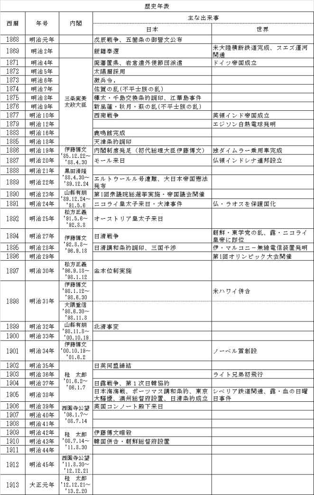
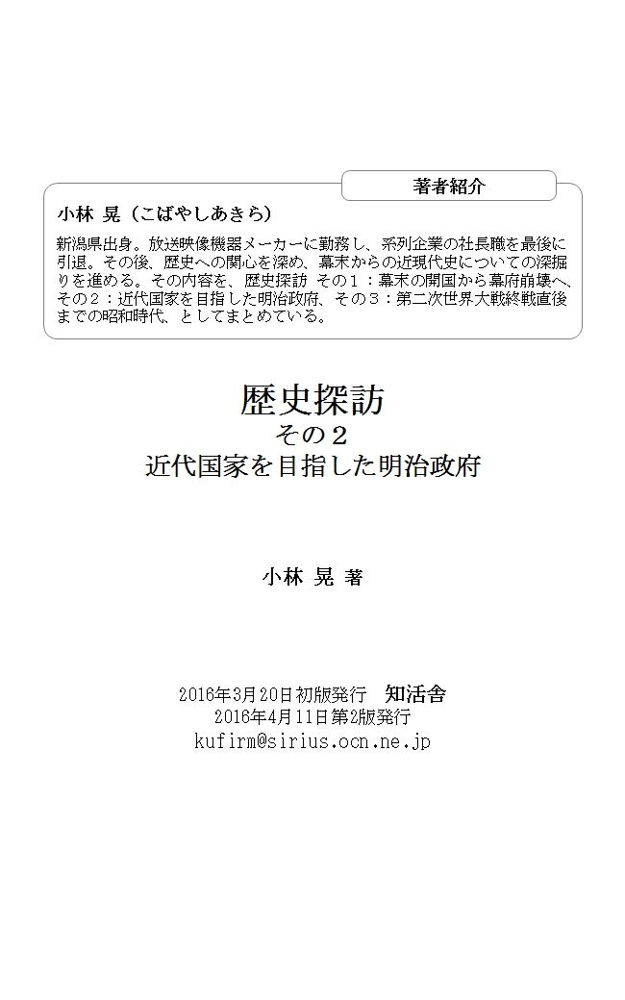

| 歴史探訪その２: 近代国家を目指した明治政府 | |
| 小林 晃 | |
| KUFirm (2016) | |
歴史探訪その２は、明治時代の話です。
長く続いた徳川幕府を倒した後に近代国家の建設を急いだ新生明治政府の首脳たちは、いかにして大改革を成し遂げたのか、それをいろいろな資料を見ながら探訪していきます。
明治政府による改革の手始めは、鎌倉時代から続いた武家制度の廃止でした。まず明治二年に大名を廃止し、各藩の領地と領民を天皇に返還する版籍奉還を実施し、次いで明治四年には廃藩置県を断行しました。
倒幕に力を貸した薩摩藩主は、新生明治政府の指導者となった西郷隆盛や大久保利通ら元薩摩藩の部下たちに、足をすくわれる結果になりました。不平士族は、廃刀令など新政府の相次ぐ開化政策を不服として、各地で反乱を起こしました。しかし、そんな抵抗も、明治十年の西南戦争をもって終止符が打たれています。
近代化のために、明治政府の首脳たちは西洋へ使節団を送り出します。先進国の文明を使節団に学び、さらにお雇い外国人の力も借りて、近代化の基礎を築くことに尽力しました。
ドイツからは、法典を学んで大日本帝国憲法を公布し、軍制は陸軍がフランスを、海軍はイギリスを範として整え、富国強兵策を推し進めました。
その後、日清戦争に勝利すると、清国から台湾を割譲させ、朝鮮については強引な外交政策を講じて併合に持ち込むなど、高圧的な姿勢で周辺のアジア諸国に対して臨み、日本の植民地にして行きました。さらには、日露戦争での勝利により、満州への進出をはたしました。維新後の日本は、富国強兵をスローガンに軍備を強化し、国際社会において列強と肩を並べるまでになりました。
そんな明治時代に起きた事件や出来事などを通じて、詳しく近代日本の歴史を探訪していきます。
長く続いた徳川幕府を倒して明治政府が誕生しました。
徳川幕府は、幕末期の一八五四年ペリーによる開国を契機に列強各国と交流を始めました。しかし、長く続いた鎖国のため、深刻な後遺症が残されていました。開国し通商契約を締結していながら、幕府は外国とはできるだけ関わりたくない消極的な態度を取り続けました。また、攘夷の風潮が残っており、明治時代に入っても外国人の殺害事件が続きました。
明治新政府が、いかにして近代国家を作りあげたのかを紹介します。
新政府は先進国の文明を早く取り入れ、近代国家を作るため、多くの改革を実施しました。その改革の基本方針として一八六八年三月に「五箇条の御誓文」が出されています。
それは由利公正と福岡孝弟が原案を作成し、木戸孝允が加筆修正したものでした。明治天皇が天地の神に誓うという形で発布されています。
一、広ク会議ヲ興シ万機公論ニ決スヘシ
一、上下心ヲ一ニシテ盛ニ経綸ヲ行フヘシ
一、官武一途庶民ニ至ル迄各其志ヲ遂ケ人心ヲシテ倦マサラシメン事ヲ要ス
一、旧来ノ陋習ヲ破リ天地ノ公道ニ基クヘシ
一、知識ヲ世界ニ求メ大ニ皇基ヲ振起スヘシ
という文面です。
一方、国民に対しては「五榜の掲示」が出されました。
一．五倫の道の勧め
二．徒党強訴・逃散の禁止
三．キリシタン・邪宗門の禁止
四．開国和親の方針と外人殺傷の禁止
五．士民の本国脱走の禁止
以上の五項目が太政官高札として示されたのです。三項までは旧幕藩時代の政策を踏襲したもので、まだ近代化への転換が進んでいない実態を示しています。
西洋文明の取り入れを急ぐ明治政府は、明治四年欧米視察団を派遣します。泉三郎氏の「堂々たる日本人」という本に、この使節団のことが書かれています。岩倉使節団の随員であった久米邦武が書いた実況報告書「特命全権大使米欧回覧実記」には旅行の全容が残されています。泉氏は克明に記録された久米の報告書に沿い自らの足で使節団の旅路をたどりながら「堂々たる日本人」を書いたのです。
泉氏の本は平成八年十一月に出版されましたが、表紙カバーに石原慎太郎氏が次のような推薦文を書いています。
『泉氏のかねてからの岩倉使節団の軌跡への傾倒は、ここにいたって衰弱した日本の蘇生のために致命的な意味を持つにいたった。氏の労作によって私たちは今改めて、かっての日本人がものを眺めるのに、いかに冷静沈着に、あくまで相対感覚を失わずに、外側からの未知のメッセイジに対処したかをうかがえるからだ。それこそが「和魂洋才」【日本固有の精神を以て、西洋の学問・知識を学び取ること・・・広辞苑より】の所以である。そしてそれは即ち、現今の浮薄で、外国からのメッセイジに安易に迎合し自らを失って省みない日本人たちへの警告と強い反省の何よりのよすがたり得る。岩倉使節団の外国での去就をつぶさに眺めると、彼らが祖国の命運を背にしながら、いかに毅然とことに処したかがうかがえる。我々はこの今こそ、私たちのごく近い祖先の者たちが示した、彼らを初めて目にした者たちもが心打たれた、国を背にして胸を張り祖国への熱情の故に真摯で敬虔で豪胆な日本人の姿勢を取り戻さなくてはなるまい。今日の日本の、自己主義の欠落した国家としての主体性を欠いた姿をかっての先人たちはどんな目で見守っていることだろうか。私たちが私たち自身を取り戻すために、これほど格好な啓示としての著書はない』。
この文面は、今から二十年前に書かれたものですが、現在でも通用する内容と思われたので、本題へ入る前に紹介しました。
使節団は、一八七一年（明治四年）十一月に横浜を出発し、アメリカ、イギリス、フランス、ドイツをはじめとする欧米十四カ国を視察しました。
この明治四年という年には、七月に新政府最大の懸案であった「廃藩置県」が断行されています。維新の首脳者たちは、懸案事項である近代国家をいかに早く作るかを学ぶため、先進国へ視察団を送ることにしたのです。使節団の一行には、維新回天の中心人物たちが選ばれています。特命全権大使には岩倉具視【公卿出身、四十七歳。王政復古の主導者】が、副使には参議の木戸孝允【長州藩出身、三十九歳。討幕の中心的人物】、大蔵卿の大久保利通【薩摩藩出身、四十二歳。討幕運動を指導。西郷、木戸と並ぶ維新三傑の一人】、工部大輔の伊藤博文【長州藩出身、三十一歳。松下村塾門下生】、外務次官補格の山口尚芳【肥前藩出身、三十三歳】の四名が任命されています。総勢四十八名という大使節団でした。
使節団の目的としては、欧米列強の文明視察だけでなく、天皇国家誕生に伴う各国元首への挨拶回りと、治外法権や関税自主権などの条約改定予備交渉も含まれていました。
その使節団にはさらに六十名近くの留学生が含まれており、中にはまだ幼い八歳から十六歳までの五人の少女も含まれていました。
使節団が出かけた後の新政府の留守役として、西郷隆盛【薩摩藩出身。討幕を指導し戊辰戦争では参謀】、三条実美【公卿。王政復古後に太政大臣】、大隈重信【肥前藩出身。東京専門学校（後の早稲田大学）創設】、板垣退助【土佐藩出身。倒幕に活躍し後に自由民権運動を指導】、井上馨【長州藩出身。尊王攘夷運動に参加】、山県有朋【長州藩出身。奇兵隊を率い倒幕運動で活躍】、江藤新平【肥前藩出身。幕末脱藩し尊王攘夷運動に参加】などが残りました。
渡航組と残留組の間では、十二箇条の約束が取り決められ、留守中にそれぞれが勝手なことをしないように歯止めがかけられていました。
使節団に同行した留学生には、後に民権思想の指導者になった中江兆民、第二次山県内閣で大臣になった平田東助、医療界の先駆者になる長与専斎、日露講和で活躍した金子堅太郎、三井鉱山を軌道に乗せた団琢磨などが加わっていました。この他に岩倉や大久保はそれぞれの息子も同伴しています。
このような留学生たちの帰国後の活躍ぶりから、留学生たちの学んだ西洋文明が、確実に日本の文明開化に貢献したことが分かります。
ところで、なぜ幼い少女五人も海外へ同伴することになったのか、そんな疑問も浮かびます。それは当時としては驚くべき決断によるものでした。
使節団が出かける一年ほど前、当時北海道開拓次官だった黒田清隆が開拓事業を学びにワシントンを訪れていました。当時ワシントンには、同じ薩摩藩出身の森有礼が駐在していて、二人は文明開化や教育について議論し、教育普及の重要性、とりわけ欧米における女子教育の普及ぶりに共鳴したのです。欧米では母親に教養が備わっているので、母親が乳児の段階から子供に教育を施せている。日本もそうすべきだ。そのためにはまず、いずれ母となる少女に欧米の進んだ教育を受けさせるべき。そんな結論にいたったのです。
その結果、欧米視察団には少女を選んで同行させることになりました。しかし、恐ろしい夷荻の国と思われているところへ娘を送り出す親はなかなかいませんでした。しかし、ようやく五人の少女を選び出すことができたのです。この少女たちの父親は、いずれも文明開化に理解のある旧幕臣や佐賀藩出身者たちでした。
使節団は、アメリカの商船「アメリカ号」で横浜を出港し、二十三日間かけて太平洋を渡り、最初の訪問地サンフランシスコに到着しています。
彼ら使節団一行が初めて西洋文明に触れた印象は、幕末期に諸外国を訪れた遺米使節団と同様に鮮烈で驚きの連続であったようです。
十二月十四日、市歓迎委員会主催の大歓迎晩餐会が開かれました。参会者は知事や市長を始めとする各界の名士三百人を越えていました。この宴席で伊藤博文は、英語でスピーチしています。おそらくそれが、公式の場における日本人初の英語スピーチで、「日の丸演説」として知られるところとなりました。
その演説内容は、以下の内容でした。
『今日、わが日本の政府および国民の熱望していることは、欧米文明の最高点に達することであります。この目的のために、わが国はすでに陸海軍、学校、教育制度について欧米の方式を採用しており、貿易についてもとみに盛んになり、文明の知識はとうとうと流入しつつあります。しかも、わが国における進歩は物質文明だけではありません。国民の精神進歩についてもさらに著しいものがあります。数百年来の封建制度は、一個の弾丸も放たれず、一滴の血も流されず一年の内に撤廃されました。このような大改革を世界の歴史において、いずれの国が戦争無くして成し遂げたでありましょうか。この驚くべき成果は、わが政府と国民の一致協力によって成就されたものであり、このひとことから見ても、わが国の精神的進歩を凌駕するものであることがお判りでしょう。わが使節団の最大の目的は、文明のあらゆる側面について勉強することであります。貴国は、科学技術の採用によって祖先が数年要したことを数日間で成し遂げることができたでありましょう。わが国も寸暇を惜しまず、文明の知識を取り入れ急速に発展せんことを、切望するものであります。わが国旗にある赤い丸は、もはや帝国を封ずる封蝋【瓶などの密封に用いる封じる蝋・・・広辞苑より】のように見えることなく、今まさに洋上に昇らんとする太陽を象徴し、わが日本が欧米文化の中原に向けて躍進する印であります』。
演説は徳川から明治へ変わる維新で、戊辰戦争などにより多くの犠牲者を出した事実と違うことも述べていますが、この若き（三十一歳）伊藤博文の燃えるような演説に対して万雷の拍手が、しばし鳴りやまなかったということです。
使節団は、次の訪問地であるワシントンへ大陸横断列車で向かいます。途中大雪のため、ロッキー山脈手前のソルト・レイク・シテイで十八日間も足止めを食らい、横浜を出てから七十日目にして、ようやくワシントンに入ることができました。
ワシントンでは、すぐさま条約改定の本交渉を始めてしまいました。それに対し、米国務長官からは、まず天皇陛下からの委任状を差し出すのが外交の慣例であると指摘されました。国際常識の欠如が露呈された訳です。
そこで急遽、使節団は大久保利通と伊藤博文を東京へトンボ返りさせています。しかし東京では、離日前に交わした「独断で重要事項は決めない」とした約束違反であるとして、委任状の発行に反対されてしまいます。二人は一説によると、委任状をもらえないなら切腹する、とさえ云って頑張ったそうです。留守政府としても二人を見殺しにする訳にもゆかず、委任状を出すことにしましたが、それは使ってはならないという条件付きでした。加えて、初代駐英公使に赴任する寺島宗則をお目付役として二人に同行させました。
結局、使節団による交渉は甘くなく中止になりました。使節団のアメリカでの駐在は結局七ヶ月近くにおよんでいます。
その後使節団は、次の訪問地であるイギリスに向かいました。そして、当時「英国に日没見ず」といわれるほどに栄光の頂点にあった大英帝国の首都ロンドンに着きます。しかしアメリカ滞在が予定外に延びたため、英国への到着は当初予定から大幅に遅れ、ヴィクトリア女王はスコットランドへ避暑に出かけてしまい不在でした。
使節団一行は、女王の帰りを待つ間、各所の視察や見学をしています。当時英国の駐日公使だったハリー・パークスが休暇で本国に帰っていたので、彼がイギリスの富強のカラクリを見せる案内役となり、造船所、紡績工場、鉄道車両工場などを見学させています。
ハリー・パークスは使節団一行にこう説明します。
『イギリスは緯度からすると樺太に相当している。気候は海流の関係で樺太と同等には論じられないが、それにしても日本に比べれば寒い土地であり、緑はあってもせいぜい羊か牛が食べられる位の草しか生えていない。そういう貧しい荒寒の土地で今日の富を築いてきたのは、地下から石炭と鉄を掘り出し、蒸気機関を発明して毛織物や綿織物を作ってきたからだ』と。そんな説明も相まって一行は、日本と似た島国であるのに、これだけの格差が生じた理由は工業と貿易であるということをしっかりと学ぶことができました。
使節団はその後、イギリスからドーバー海峡を渡り、明治五年十一月六日にフランスへ入りました。訪問地のパリは、石造りの美しい建物が立ち並び、煤煙で汚れた喧騒のロンドンに比べ見違えるような別世界でした。十年前にロンドンを訪れた幕末文久遺欧使節団も、交通事故や煙害など、同じようにロンドンの悪い面を報告しています。
使節団は、パリで二ヶ月余り滞在し、砲台、兵学校、ナポレオンの墓、鉱山学校、天文台、博物館、図書館などさまざまなところを見学しています。
使節団は次に、ベルギーとオランダを訪れました。オランダは、日本の鎖国時代にヨーロッパで唯一交流のあった西洋文明の窓口でしたが、実際に来てみると湿地の国土で資源の乏しい国でした。それでも独立と富裕を保っているのは、勤勉で辛抱強い国民性と積極的に海外に出て貿易に努めた進取の精神にある、と使節団の随員久米は述べています。
これら各国を視察後の感想として、大久保は、英・米・仏は開化しすぎているので、日本が当面お手本にするには、ドイツかロシアあたりが適当かもしれない、と語っています。
使節団は、オランダから明治六年三月九日に新興国ドイツの首都ベルリンへ入りました。ドイツではビスマルク宰相から「当今、世界はみな親睦礼儀を以て交わっているように見えるが、それはまったく表面上だけのことで、内面では強弱相凌ぎ大が小を侮るというのが実情である」と国際社会の実態を直言されています。使節団の首脳たちは、このスピーチに感銘を受けました。
話は飛んで、平成二十四年一月一日のことです。当日の読売新聞一面に「指導者考」というコラム欄があり、そこに中曽根元首相が一文を寄せています。
『私は戦争を経験し大惨事の上に世界と自分の国を見つめてきた。我々は亡国の淵から立ち上がったが、今の人たちは繁栄の丘から歩き出したせいか、歴史への自覚が浅い。（中略）外交とは武器を持たない戦争・講和だ。当時私は国際会議には出征兵士になったつもりで、緊張感を持って出たものだ』。
ヨーロッパの国々は陸続きで国境を接しているため、侵略には長い歴史があり、それだけ外交経験も豊富でした。中曽根氏も指摘しているように、先人の苦労した貴重な体験を振り返り、島国という地勢上から守られた侵略への危機感に不慣れなことを自覚する必要があります。諸外国に比べ外交に未熟なことを肝に銘じて、交渉に当たるべきだと思います。
留守政府の三条実美から木戸と大久保の二人に帰国命令が出されたので、まず大久保だけが帰国しました。残りの使節団一行は次に、ベルリンから列車で二昼夜かけて、ロシアの首都サンクトペテルブルクへ移動しました。ロシアでは十八日間滞在した後に、ドイツ領まで南下し、ここで帰国する木戸と別れ、デンマーク（コペンハーゲン）、スエーデン（ストックホルム）の北欧各国を訪れています。その後、ドイツ経由でアルプスを越え、イタリアのフィレンツェに一泊した後、ローマに向かいました。
ローマでは、サンピエトロ寺院、ヴァチカン宮殿など多くの広壮華麗な大建築物とおびただしい美術品を見物しています。彼らは、今さらながら西洋文明の奥深さと優秀さに触れ、感銘を深めています。
一行はその後、汽車でオーストリア（ウイーン）を訪れ、ウイーン万国博覧会を見物した後、最後の訪問地スイス（ベルン）に到着しました。
この小さな山国では、山水の美を資源として他国からも客を集め、ホテル、レストラン、馬車、遊覧船、登山電車までも設け、観光を生業として成り立たせていることを使節団一行は学んでいます。
そして国防に関してスイスは注目すべき自主独立の精神を有していることを随員久米は、『外国侵入の防御は、国中みな奮って死力を尽くすこと、火を防ぐが如く家々みな兵を講じ、一銃一戎衣（戦時中の衣）を備えざるなし、（中略）隣国より来たり侵す時は民みな兵となり、（中略）婦人は軍糧を弁し創傷を扶け、人々死にいたるも他よりその権利を屈せらるるを恥ず、故にその国小なりといえども大国の間に介し、強兵の誉れ高く他国よりあえてこれを屈するなし』と書いて報告しています。
ジュネーブでは、レマン湖において楽団の乗った周遊船上で歓送会を開いてくれました。
その後使節団は、当初予定していたスペイン、ポルトガルの訪問を取りやめて、七月二十日、マルセーユからドーバー海峡を渡り、七ヶ月余りにわたる欧州諸国の旅から帰国の途についています。その途中で立ち寄ったアジア各国は、ほとんどがポルトガル、オランダ、イギリスなどの植民地になっていました。使節団は、欧米諸国の弱肉強食を地でゆく現実を目の当たりにしたのです。マルセーユを発ってから五十五日目の明治六年九月十三日にようやく横浜に到着します。しかしその時の出迎えぶりは、出発時の華やかさとは一転したわびしいものだったようです。
使節団が学んだことは「国を豊にする基は産業と貿易である」、その要因は、蒸気機関の発明によるもので、交通機関が極めて重要であり、また通信も重要であるとしています。これらの技術は僅か四十年ほど前から発達しはじめたものであり、才が劣るわけでもなく、知が鈍いわけでもない日本人が努力すれば必ず追いつけるものだと、使節団は確信しました。
日本は、全般的に貧しいとはいえ、貧富の差が少なく治安もよくて温和な社会であると、江戸時代に日本へ来た外国人たちが異口同音に賞賛していたことでした。
そんな外国人たちには、この使節団はどのように見えていたのでしょうか。
すでに江戸時代にも遺米・遺欧使節団により交流のあったことを知っていた米・英の新聞は、この使節団の日本人を高く評価しています。
最初に訪れたアメリカの新聞は『礼儀作法の点で、アメリカ人は日本人に教えられることが多かろう。彼らは上品で礼儀正しく会釈し、何の苦もなく紳士的な敬意を持って人々と面談する。個人の客間でも公の歓迎会でも、また街頭でも、彼らの振る舞いは極めて高く賞賛されて来た』と書いています。
イギリスではタイムズ紙が、使節団の人物像を『これらの人物は、イギリスよりも歴史が古い王国における偉大な官史、偉大な貴族というだけでなく、自国にとって重要かつ極めて有益な革命を自らの命を懸けて成功させた政治家でもある。彼らの発揮する権力は、良きにつけ悪しきにつけ、我々の通常の理解を越えた影響力を持つ』と書いています。また、トップリーダーが来たことや女子留学生を連れてきたことを『こうした思い切ったことができる日本の国と日本人に敬意を表す』と特筆しています。
フランスでは、使節団一行がロンドンで仕立てた洋服姿であったため、東洋からの珍客を見ようと集まった人たちをガッカリさせています。
イタリアでも『大使を初め書記官や随員の全員が、洋服を着用し、英語とフランス語を流暢に操り、ヨーロッパ式の食事をする。しかし握手をしながら体を二つに折る挨拶を交わす。この特異な習慣とオリーブ色を帯びた褐色の肌色を手懸りとする以外、ヨーロッパ人とまったく見分けがつかない』とフィレンツェの新聞は書いています。
使節団の帰国後、明治政府内で征韓論が大激論となりました。
日本と朝鮮とは、鎖国中にも将軍が変わるたびに朝鮮通信使が来日するなど特別なものでした。歴史探訪その１で述べたとおりです。しかし幕末には、国内の混乱から朝鮮との交流は中断状態にありました。
明治政府になって、当時鎖国政策を取っていた朝鮮に対して、日本政府は三回も国書を送り国交回復を求めていましたが拒否されています。それに対し、留守政府を預かっていた西郷隆盛や板垣退助らは征韓論を主張していました。国内に起こっていた不平士族の不満を征韓によって外へそらす狙いもあったようです。留守政府は、西郷の朝鮮派遣を決めましたが、帰国した岩倉らは征韓派を押さえ、中止させています。
一方、明治七年には征台の役【台湾に漂着した琉球人が殺害されたことに清国へ抗議するも、清国は台湾とは無関係と主張したため、西郷従道指揮のもとに日本軍を台湾に送り高砂族を討伐】や翌年の江華島事件【朝鮮の江華島付近を示威行動中の日本軍艦「雲揚」が砲撃された】などが起きています。明治日本は、このような事件から次第に清国や朝鮮に圧力をかけ、結果的に台湾統治や朝鮮の開国とその後の併合に進んでいきます。西洋列強によって開国させられた日本が、両国に対してまるで列強と同じような行動をしました。
明治五年九月十三日に使節団が帰国してからは、留守中に起こった征韓論をめぐる対立で「外遊組」対「留守組」、「内治優先派」対「対外強硬派」、「薩長」対「土佐肥前」などさまざまな要素が入り組んだ権力争いが始まります。
明治六年十月十四日の閣議で、西郷隆盛と大久保利通は大激論を交わし、翌日の会議に西郷は欠席してしまいます。西郷が辞めれば配下の兵が暴発して大混乱を起こすことを恐れ、三条実美と岩倉具視は、大久保との密約を反故にして「西郷遺韓」を決定します。
大久保は唖然として明くる日の早朝、三条の屋敷を訪ねて辞表を提出し、外遊組もそろって辞意を表します。十月十八日深憂の余り、三条は人事不省に陥ってしまいます。この三条昏倒を奇貨【転じて、利用すれば意外の利を得る見込みのある物事や機会・・・広辞苑より】として、岩倉が太政大臣代行になり、天皇に「征韓論の非」を説いて、一気に遺韓論を潰してしまいます。この大逆転劇の結果、西郷、板垣、江藤、後藤、副島らは一斉に辞職し、主権は大久保一派に移りました。それが、いわゆる「明治六年の政変」でした。
明治四年に廃藩置県の大号令とともに始まった大手術は、余りの切れ味のよさに当座こそ出血もないように見えましたが、旧武士や不平士族の不満が爆発し、明治七年に佐賀の乱、九年に熊本神風連の乱、萩の乱、秋月の乱などが起こりました。その最後の大噴火というべきものが、明治十年の西南戦争でした。
廃藩置県の大手術は、その後幾多の出血を伴い、余病も誘発し、結局治療が終わるまでに六年の歳月を要しました。それを推進した大久保利通は、明治十一年五月十四日、東京の紀尾井坂で刺客に襲われ命を落としました。
明治維新とは、七百年続いた武家政治を天皇政治に戻し、各地に独立していた藩政治を一つの国家に統一する大改革でした。その内の一つだけでも歴史的改革と云えるものなのに、それらすべてを一度に進める驚天道地【世間をひどく驚かすこと・・・広辞苑より】の大改革がなされたのです。当時の人たちには、気概というか覇気というか気迫というか、要するに気力一杯の行動力があったのです。その背景にあったのは「日本が危ない」という危機意識でした。
七つの海を支配する世界に冠たる大英帝国と薩摩は一藩で戦い、長州もまた一藩の力で欧米列強四ヵ国の艦船と戦火を交えたのですから、その元気のよさは驚くばかりです。そして戦ってダメとなると、潔く方向転換して開化路線に転じてしまう、その代わり身の早さは見事で颯爽としたものでした。日本人には、失敗を恐れずにチャレンジする、メゲないで次の手を打って出るしたたかさがあると、「堂々たる日本人」の著者である泉氏は賞賛しています。
一八七七年（明治十年）一月、鹿児島の私学校生徒が、政府の弾薬庫を襲撃しました。その二月には、政府による西郷隆盛暗殺の陰謀があるとの疑いに対し、下野していた西郷は政府を尋問するため、陸軍大将の資格で私学校の生徒とともに上京を目指して挙兵し、熊本城を襲撃します。三月、田原坂で政府軍と激戦を交わしますが、そこで劣勢となり、人吉、宮崎へと退却を開始します。七月には政府軍が都城を占領します。八月には西郷は宮崎の美々津、延岡の和田峠へと転戦を続けますが、長井村で政府軍に包囲されてしまいます。そこで西郷は、陸軍大将の服を焼き捨てます。八月十七日、可愛岳を越え、政府軍の包囲を突破し、三田井を経て九月一日鹿児島へ戻ります。九月二十四日、政府軍の総攻撃を受け、西郷は城山の岩崎谷で流弾に当たり負傷し別府普介の介錯を頼み自刃しました。
それで七ヶ月にもおよぶ日本最後の内戦は、幕を閉じました。戦死者は西郷軍が六千七百六十五人、政府軍が六千四百三人にものぼる壮絶で悲しい戦いでした。
西郷の人間性は、現在でも高い評価を受けています。西郷の残した言葉は、庄内藩有志によって「南洲翁遺訓」として本にまとめられ、一八八九年（明治二十二年）の大日本帝国憲法発布に伴う大赦で西郷の名誉回復がなされた翌年に出版されています。
戊辰戦争で幕府軍であった庄内藩の人たちが、なぜ官軍の将であった西郷の遺訓を残すのか、いぶかしく思う方も多いでしょう。この庄内藩による「遺訓集」を発刊した経緯こそが、西郷の人柄を示すものでした。
庄内藩は戊辰戦争で新政府軍と戦って全面降伏しました。勝利した官軍によって武装解除されるのがあたりまえですが、西郷は逆に官軍から刀を取り上げ、庄内藩に丸腰のまま入って行かせたのです。荒くれ武士の乱暴狼藉を未然に防ぐための措置でしたが、敗者への配慮・敬意でもありました。勝った側から刀を取り上げ負けた側に帯刀を許したのですから、庄内藩の人々は驚愕したのです。その後、西郷が下野して故郷へ戻ると、西郷の度量の大きさと人柄の素晴らしさを慕った庄内藩の若い武士たちは、鹿児島まで教えを請いに行っています。その中には庄内藩主酒井忠篤公の姿もありました。また庄内藩士の中には、制止を振り切って西郷に従い、西南の役に従軍して戦死した人たちもいたのです。
参考文献
「堂々たる日本人」 泉三郎著 祥伝社
「人生の王道」 稲盛和夫著 日経ＢＰ社
「日本史事典」 歴史教育研究所編 旺文社
明治政府は、近代化を急ぐため、多くの外国人を雇い入れていました。平成二十六年六月、富岡製糸場が、世界遺産に登録されたのは記憶に新しいですが、この製糸場を作ったのも、お雇い外国人であったフランス人ポール・ブリューナです。彼は明治政府と五年の雇用契約を結び、一八七一年（明治四年）に工場を建設し製糸機械を輸入して、繭から生糸を作る事業を立ち上げています。日本は幕末から多くの外国人の協力を得てきましたが、ここでは主に明治政府の雇った外国人の実態について紹介します。
お雇い外国人の総数は、一八七四年、七五年（明治七年、八年）の五百二十名が最多で、一八八〇年（明治十三年）には半減し、その後も次第に減少しています。職種別では、明治十年代の初めまでは技術者、学術教師、事務家の順で、技術者は約二百十名と最多の四十％を占めていました。次に多い教師は、約百五十名（二十九％）でしたが、二十年代以降は学術教師、事務家、技術者の順となり、一八九四年（明治二十七年）には学術教師五十九名、事務家十六名、技術者十名の計八十五名と百名を割っています。そして明治三十年前後には、ほぼその歴史的な意義を終えました。
富岡製糸場を作ったブリューナの年俸九千円は、横須賀製鉄所のレオンス・ヴエルニーの一万円に次ぐ高額でした。当時の日本人職工の年俸は、僅かに七十四円でしたから、驚くほどの高額でした。当時の日本政府の大臣と比べても遜色ない額であった上に、往復の交通費はもちろんのこと、高級住宅が建築され無償で貸与されました。
雇われる外国人にとっては、交通不便な極東の非文明国、ちょっと前まで外国人と見れば平気で殺傷していた国、にまで赴く訳ですから、高額の報酬をもらって当然のことでした。また、日本に来ても今までの生活様式を変える訳にゆかないので、いろいろな西洋的な設備を要求するのも無理からぬことでした。
明治政府の指導者たちは、先進文明国と競争できるとまで行かなくても最低限追いつくためには、それなりの犠牲は払わなくてはならないという考えでした。高額な俸給など厭うところではなく、況んやそれにより殖産興業が発展して国益が増進するのなら、十分元が取れると考え、財政上の苦境にもかかわらず甘んじて別格の出費をしたのです。この出費はいわば、日本が近代国家に到達するためのハイウエーに乗り入れる際の高価な通行税のようなものであったとも云えるでしょう。
お雇い外国人の経費が著しくかさみ、明治政府の財政が逼迫したことで、お雇い外人の技術指導への従属から一日も早く自立しようとする動きが高まりました。その結果、僅か十五年という短期間に、技術面における自立化を達成するに必要な人材を養成できたことは特筆に値することです。
明治政府の最重要課題は、近代的な富国強兵でした。大蔵大臣を中心とする閣僚たちは、富国を第一に考え、資本主義社会の建設を目指しました。それは「富国あっての強兵」という近代的強兵策と一体不可分なものでした。しかも、この政府の近代化政策は、列強の東アジアへの帝国主義的進出という国際的環境下で、列強に対抗して国家的独立を確保するため急ピッチで進めることが要請されたのでした。
招聘された外国人たちは、そのような明治新政府の近代国家建設を目指した方針に基づき、欧米先進国の近代的な諸制度、資本主義的な生産技術・方法の移植を、その実際面での知識や技術を指導し、提供しました。彼らの寄与により明治日本を建設するための基礎工事が完成したのです。
一八七〇年（明治三年）に工部省が創設され、お雇い外国人の七十二％に当たる百五十三名が同省に集中して雇われました。その内、約六十八％はイギリス人、続いてフランス人が二十二％を占めています。幕末の頃から技術指導を受けていた関係から、イギリス人は鉄道・通信方面、フランス人は横須賀製鉄所（造船・製鉄）に集中していました。
一八七四年（明治七年）は、明治政府が前年の征韓論争という大きな政治危機を乗り切り大久保利通が内務卿となった翌年ですが、岩倉遺外使節一行の海外における見聞を基礎に殖産興業政策を展開し、外国人の雇い入れは一挙に二百三十名近くになりました。梅渓氏の本には、活躍したお雇い外国人の具体的功績が詳しく掲載されています。ここではその具体的内容は割愛します。いずれにせよ、彼らの活躍した分野は、政治・法制、軍事・外交、経済・産業、教育・学術など広範囲におよんでいます。
近代化に向けて外国人に教えを乞うところは多く、来日していた外国人の活躍は江戸時代の幕末期から始まっていました。その一人であるイギリス公使館でアーネスト・サトウと共にハリー・パークスに仕えていた、医師ウイリアム・ウイリスの活躍について触れます。
ウイリスは、一八六三年の薩英戦争、および戊辰戦争における北越戦争や上野戦争の戦いで負傷者の治療にあたりました。戊辰戦争では、討幕軍と幕府軍に対し中立の立場であったイギリスは、両軍の負傷者を治療しています。
明治新政府は、東洋医学から西洋医学への転換という課題に対して、この戊辰戦争に貢献したウイリスと契約を結ぶことにしました。しかし、新政府は次第にドイツ医学へと傾注して行ったため、英国医師のウイリスは東京医学校（現在の東京大学医学部）校長を辞任することになり、鹿児島藩にお雇い外国人医師として雇われ、一八七〇年「鹿児島医学校」の校長として西洋医学を教えています。
朝日新聞社発行の「遠い崖 アーネスト・サトウ日記抄」萩原延寿著の本に、そのウイリスのことが詳しく載っています。
この他にも幕末の一八五七年（安政三年）にオランダ商館付きの医師として来日したポンペや、その後任のボードウインは長崎の医学伝習所（現在の長崎大学医学部）で西洋医学の普及と教育に功績を残しています。
参考文献
「お雇い外国人」 梅渓 昇《うめたにのぼる》著 講談社学術文庫
前述のように、近代国家の設立を急ぐため、明治新政府は成立当初から多くの外国人を雇い入れました。明治中期に宮内省は、宮中制度改革のため、プロイセンで侍従を務め、その夫人も宮廷女官である経歴を持つ、ドイツ人貴族のオットマール・フォン・モールを日本へ招聘しています。本章は、二年間滞在したモールの日本滞在記からの紹介です。
モールは一八八七年（明治二十年）三月、日本へ出発する前にベルリンで、皇帝ウイルヘルム一世とアフヴスタ皇后との光栄あるお別れの席に臨んでいます。その歓送会は宰相ビスマルク侯爵が主催したもので、当時特別使節としてベルリンに滞在中であった日本の海軍大臣西郷従道伯爵も招かれていました。
ロシアの首都サンクトペテルブルク駐在のドイツ帝国領事であったモールは、宮廷女官の妻ヴァンダと四人の子供たち、およびその女性家庭教師や侍女ら一行と共に、三月中旬ウイーンを経て船で日本へ向かいました。スエズ運河から紅海を通りセイロン、シンガポールなどに寄港し、香港で「オーデル号」から「ヴエルダー号」（香港～横浜間の定期船）に乗り換え、一八八七年四月二十九日に横浜港に到着しました。横浜から一時間汽車に乗って東京（新橋）に着き、そこから宮廷貴族用の馬車で鹿鳴館に入りました。
モールは、直属の上司となった伊藤博文の人物像につき、次のように述べています。
『首相兼内相の伊藤博文は、四十代半ばで、背は高くなく黒ひげをはやし、礼儀正しく毅然としており、自己意識の旺盛なアメリカの政治家を思わす風格を有していました。彼は貴族の出ではなく地方の士族生まれでしたが、幕末尊王の旗印を掲げた雄藩の一つである長州の出身であり、宮中内で重要な地位を占めていました』。
伊藤伯は、他の多くの日本の新しい政治家たちと同じように、急進的な見解を持っていて、多くの旧来のしきたり、習慣、それに制度を廃止しようとし、実際に廃止もしていました。
モールはまた日本建築についても以下のように述べています。
『東京は三つの部分に分かれています。
第一は円形の城壁により囲まれ庭園に恵まれた皇居地区、第二は以前には大名屋敷が立ち並び、今や次第に省庁や議会などの政府関係の建物が建てられつつある地区、第三は市民と商業のための市街地です。この第三の地区も、掘割と城壁に囲まれていました』。
彼の日本の木造建築についての評価が以下に示されています。
『日本がヨーロッパに対し門戸を開いた後に初めて日本へやって来た西洋の建築家たちには、地震の多い土台の上に長持ちする建物を作る方法をまだ理解できていませんでした。その頃の西洋人にとっては、なぜ日本人が冬の間の寒さや火事の危険が多いにもかかわらず、木造建築に固執し続け洋風煉瓦作りの建物に変えようとしないのか理解できないことでした』。
しかし、『夜間に突然地震が発生した際に、自分自身だけでなく家族をも階上の寝室から戸外に脱出させることがいかに難しいかを知れば、誰しも日本人が木造平屋の日本建築をこよなく愛好している理由が解るはずだ』とモールは彼の理解をすなおに記述しています。
さらにモールは、日本の爵位についても報告しています。
『日本には、万代から模範とされてきた中国式の位階、爵位がすでにあり、漢字で表記されていました。そこに、英・仏両国で用いられた公候、伯子、男の爵位を取り入れ、これを中国と日本で使われていた世襲の位階に翻訳して用いています。
公爵は、日本のいわば三大豪族である徳川、薩摩、長州、それに宮中貴族の中から元太政大臣の三条実美と王政復古を成し遂げた大政治家岩倉具視の子息にのみ与えられました。
侯爵は、明治政府になったことで、身分を奪われた大名と家族などに与えられました。その後に、伊藤博文ら、いく人かの政治家もこの爵位に達しました。
伯爵と子爵になったのは、それぞれの家柄によりますが、貴族、さらに軍人、閣僚、それに宮内省の官僚です。そして、男爵はずっと多くの官史、軍人に与えられました』。
モールは日本国内の旅に出かけました。
明治二十年七月二十三日、横浜から二日間の船旅をして神戸に着き、神戸、大阪、奈良を見物しています。奈良では正倉院の宝物殿に行き、東京から預かって来た鍵でその門戸を開き、内部を見ています。しかし宝物を観た感想として、「素人にとってはがらくたの集積にすぎないように思われた」、と述べています。奈良では、さらに東大寺の大仏、春日大社、法隆寺などを見物して、京都へ行きました。京都では、御所、二条城、三十三間堂、清水寺、東本願寺の他、陶芸や絹織物の工房を見学しました。
その後は、人力車で大津に入り、琵琶湖周辺の三井寺、石山寺、唐崎などを見物して彦根に立ち寄り、長浜から名古屋へと汽車で向かいました。
名古屋城では金の鯱を見て、一八七三年ウイーン万国博に出展された帰途、開運会社の汽船が難破して海中に沈んだ鯱が、潜水夫によりサーベージすることに成功した話を思い出しています。
名古屋から東京までの帰路は、人力車に乗り岡崎、豊橋、浜名湖を見ながら静岡付近で見えた富士山の雄姿に感激しています。静岡から三島への途中、富士川ではボロ舟で渡り、三島から箱根に行きました。
モールは、箱根の素晴らしさを次のように褒めちぎっています。
『魅力的な芦ノ湖は、森の多い高い山々をめぐらせている。そして山と山の間に、空高くそびえる日本の象徴、霊峰富士を仰ぎ見ることができる。この湖は、アーヘン湖あるいはコツヘル湖、ヴァルヒェン湖など、チロルやバイエルン地方にある山と湖によく似ている。勾配の大きい山脈にも、針葉樹が密生している。一番麓に茂る木々は、濃緑色の鏡面のように静かで、魚が豊富な芦ノ湖の中からそびえたっているかのようである。木々の枝は広く伸び湖面に辺りの風景と共に映し出されている。ざわめきつつ流れる小川と小川の間に、山の上の苔むした古い社に向かう、古めかしい石段が見受けられる。特に美しいたたずまいを見せるのは、この地方の中心的神社、箱根権現である。
湖を見下ろす厳しい丘の上に、近代的な洋館が輝いている。これが箱根御所であるのだが、この場に相応しくない建築様式でまったくの目障りである。御所の背後の緑なす杉の古木の間、そして絵のように美しい元箱根の集落の遥か上方のすぐ近くに、箱根権現があることを示す赤い木製の鳥居が見える。この辺りは平穏そのもので、真の保養地として最適である』とここでも洋館が目障りであると指摘しています。
モールは、宮中における賓客応接用の女性衣装として、民族衣装（着物）を採用するように提議しました。
それに対して伊藤博文は『日本において中世はすでに過ぎた。もっと後の時代には日本がまた民族衣装に復帰することもあるかも知れないが、少なくとも今は宮廷内での女性の応接用衣服は洋装を厳守することに決定されている。衣装問題は政治問題であり宮内省には決定権限はない。そんな既定事実について今さら議論して大切な時間を空費すべきでない』という見解でした。
モールは、まるで絵のように美しい宮廷衣装が俗悪な洋式衣装に取って代わられることを憂えた自分の意見に対し、伊藤は頑として譲ろうとしなかった、と嘆いています。文明開化の象徴ともいえる公式行事における女性の服装を、純日本風の和服から洋服へ切り替えることは、明治政府にとって当然のことだとして聞く耳を持たなかったようです。
一八八九年（明治二十二年）二月十一日、神武天皇即位の日、すなわち「建国の日」に新宮殿で大日本帝国憲法の発布式典が行われました。
なんと、この日の朝、神道の礼拝に参加すべく大礼服を着用し皇居に向かった文部大臣森有礼子爵【薩摩藩出身。アメリカイギリスに幕命で留学。明治政府の近代化教育制度に尽力】が狂信的な神主によって刺された、という信じがたい報道がありました。大臣の警護にあたっていた警察官が刺客の首を日本刀で切ってしまったため、犯行動機の解明はできませんでした。一説には、アメリカ仕込みの教育を受けた森文相が、伊勢神宮の拝殿に土足で上がり込み、聖域を覆う垂れ幕をステッキで押し上げたため、伊勢神宮の神官の怒りをかったのだと噂されました。また別の説では、犯人は学生であって、この男は文相のせいで大学の授業料が上がり、学問を続けることができないため今回の犯行におよんだ、ということでした。
この傷がもとで森文相は翌二月十二日午前五時に亡くなっています。
モールは、一八八九年（明治二十二年）四月三日「ヴエルダン号」に乗って横浜を出港し、神戸から京都に立ち寄り二日間京都見物をした後、四月六日神戸から長崎港を経由し二年間滞在した日本を後に帰国しました。
オーストリア皇太子やモールも同じように書いていますが、日本伝統の着物や木造建築の素晴らしさは、西欧化に向け改革に突っ走る当時の日本人指導者には、理解のできないことであったようです。
参考文献
「ドイツ貴族の明治宮廷記」 オットマール・フォン・モール著 金森誠也訳 講談社学術文庫
今から百二十三年前、和歌山県紀伊半島先の串本沖で起きたオスマン帝国軍艦の遭難事故について紹介します。
日本近海で起きた外国船の遭難事故を救援した日本に対して恩義を感じ続けることや、事故現場の串本町で今でも五年ごとに慰霊大祭を行って過去を振り返る律儀さは、日本人にも通じるトルコ人の国民性なのでしょう。
トルコは親日的な国といわれていますが、その背景には明治中期に起きた、この出来事に根差していることが解ります。
一八八九年（明治二十二年）春、小松宮彰仁親王殿下のオスマントルコ訪問に対する返礼などの目的で、エミン･オスマン海軍少将を団長とする親善使節団が来日しました。使節団は、全長七十六メートル、二千三百四十四トン／六百馬力の木造船、トルコ海軍軍艦「エルトゥールル号」で、明治二十二年七月十四日イスタンブール港を出港、スエズ運河を経由して明治二十三年六月七日横浜港に入港しています。
オスマン海軍少将一行は、明治天皇に謁見して、アブドゥルハミト二世皇帝より託されたトルコ最高勲章および種々の贈り物を天皇に捧呈し、併せて両国の修好という皇帝の意向を天皇に伝えました。
使節団一行は、東京に三ヶ月間滞在しました。その間、官民あげての歓迎を受け、明治二十三年九月十五日横浜港を出港して帰国の途につきました。日本国当局は、九月は台風の季節であり、また建造二十六年も経た木造船であることから修理を勧めましたが、当初の予定通りに出港したのです。
横浜港を出た翌日の九月十六日、和歌山県串本町樫野崎沖を航海していた時、折からの台風に遭遇し、猛烈な波浪と強風により航行の自由を失いました。船は次第に樫野崎の岸に寄せられ、昔から船乗りに恐れられていた船甲羅岩礁に激突しました。
船体破損部から浸入した海水により、機関が爆発（水蒸気爆発）し、オスマン海軍少将以下五百八十七名が死亡し、生存者は僅か六十九名という大惨事になりました。
この遭難に際して、当時の紀伊大島村民は、不眠不休で生存者の救出、援助、介護、遺体捜索を行い、日本全国からも多くの義援金や物資が届けられました。
さらなる治療のため、生存者の六十九名は神戸に移されました。明治天皇は侍医を、皇后陛下は十三名の看護婦を、神戸に派遣されました。六十九名の生存者は、神戸で治療を受けた後、十月五日、東京から「比叡」と「金剛」二隻の軍艦で帰国の途につき、明治二十四年一月二日、無事イスタンブール港に到着してトルコ国民に迎えられました。
遭難翌年の二月には、遭難海域を眼下に見下ろす殉職者の遺体が埋葬された樫野崎に、地元有志により「土国軍艦遭難之碑」が建立されました。昭和三年八月六日には、大阪日ト貿易協会の発議により第一回遭難追悼祭が催されています。
翌四年四月五日、同敷地内に日ト貿易協会により追悼碑が建立され、同年六月三日、昭和天皇が樫野を行幸され参拝されています。そんな天皇参拝の報がトルコ本国に伝わると、トルコ共和国初代大統領のムスタファ･ケマルは、墓域の大改修と新しい弔魂碑の建立を決意しました。和歌山県がトルコ政府からの委託を受けて設計施工を進め、慰霊碑は昭和十二年六月三日に除幕されています。その時併せて五十周年追悼祭が開催されています。
「エルトゥールル号」の遭難は誠に痛ましい悲劇ではありましたが、日本の官民あげての救援活動が、トルコ国民に親日の念を根づかせるきっかけになりました。串本町では、遭難以来、第二次世界大戦の一時期を除いてトルコ共和国との共催で五年ごとに慰霊大祭が開催され現在にいたっています。
この話には後日談があります。今から三十一年前の一九八五年三月十七日、イラン･イラク戦争の最中に、イラクのサダム･フセインがイラン上空を通過する航空機を無差別攻撃すると宣言しました。イラン在住の日本人たちは、国外へ脱出すべく空港へ行きましたが、本国から救援機が来ないため、テヘラン空港でパニック状態となりました。そこへトルコ航空機二機が到着して、日本人二百十五名を搭乗させ、日本への脱出を助けました。前駐日トルコ大使ネジアティ･ウトカン氏は、この救援機に関して『エルトゥールル号の事故に際し、大島の人たちや日本人がなしてくださった献身的な救助活動を、今もトルコの人たちは忘れていません』と語りました。トルコの人たちは、実に百年も前にあった歴史上の恩義を忘れていなかったのです。
参考文献
和歌山県 串本町 ホームページ
明治二十四年、ロシア皇太子ニコライは、来日中の琵琶湖遊覧を終えて京都に戻る帰路、警備していた巡査に切りつけられて重傷を負った大津事件を紹介します。
日清戦争前の日本と大国ロシアの関係、当時の日本人のロシアに対する感情、皇室や政府関係者の事件に対する危機対応はどうだったのか。また、犯人の裁判において法曹界が司法権の独立を守ったことや、犯人津田と車夫の事件後の運命など、この事件には多くの学ぶべきことが凝縮されています。
ニコライ皇太子の来日は、当時ロシアが建設に着手しようとしていたシベリア鉄道のウラジオストックとハバロフスク間の起工式に、父である皇帝アレクサンドル三世の名代として臨席することに関連していました。その途中、東洋諸国を巡歴して見聞を広め、日本にも訪れて天皇陛下に謁見し、それからウラジオストックへ赴く予定だったのです。
ニコライ皇太子はジョージ親王や随員と共に、明治二十三年十月二十三日午後二時王室列車でロシアの首都サンクトペテルブルクを出発しました。途中まで見送りの皇帝と皇后陛下に国境で別れを告げ、ポーランドのワルシャワを経てオーストリアの首都ウイーンに入りました。それからアドリア海のトリエステ港で「アゾヴァ号」に乗りこみ、ギリシャに立ち寄って縁戚関係にあるギリシャ王室の第二王子ジョージ親王を迎えいれています。
ニコライ皇太子一行は、明治二十四年二月十二日セイロン島コロンボに着き、その後インド、シャム（タイ）、仏領インドシナのサイゴンを経て、四月四日香港へ到着しました。その間に、ロシアのジョージ親王は病気に罹り、インドから帰国しました。ロシアのジョージ親王が一行と別れて帰国したので、ニコライ皇太子と一緒に来日したのはギリシャ王室のジョージ親王でした。
一行は、中国漢口で五隻の軍艦を新たに従え、日本最初の寄港地長崎港へ四月二十七日九時入港しました。
ニコライ皇太子一行の来日は好ましくないとする報道が、当時の新聞の一般基調でした。幕末にロシア艦が樺太や択捉島などを襲って略奪・放火など不法な行為をしたことによるロシアへの伝統的な不信感に加え、シベリア鉄道の建設はロシアが朝鮮半島に勢力を伸ばすための手段だとの見方もあって、ロシアに対する警戒心が強かったのです。
そんな論評に影響を受け、シベリア鉄道の起工式に臨席する皇太子が日本を訪れることに強い疑念と警戒心を抱く論議が、国内に高まっていました。軍艦を率いて日本にやってくる皇太子一行の目的は、決して遊覧旅行ではなく、軍事偵察のためではないかとの憶測も深まっていました。
そうした憶測をさらに強めたのは、駐日ロシア公使シェーヴイチの傲岸な態度でした。
外国軍艦の入港できる港は条約によって限定されていましたが、シェーヴイチは皇太子一行を乗せた軍艦が自由にどの港にも入れるよう、青木外務大臣に要求しました。これに対し、青木外務大臣は皇太子の座乗する「アゾヴァ号」と随伴する艦の二隻のみは許すが、他艦の入港は拒否すると回答しました。これに激怒したシェーヴイチは、あくまでも日本政府が許可しない場合には、砲撃による武力行使も辞さないと威嚇しました。
青木は拒否しようとしましたが、ロシアは世界の強国であり、軍備、経済など国力の点で、日本よりはるかに優位に立っていましたので、ロシアとの摩擦が生じることを恐れシェーヴイチの要求をのみました。
シェーヴイチはまた、皇太子が東京に来てロシア公使館を訪れる際に、公使館前の電線が低くて好ましくないとして、その電線の張替えを外務省に要求したりもしています。
このようなことが新聞に報道され、皇太子の訪日目的は日本に対する武力の誇示であり、軍事偵察であるとの見方が高まっていたわけです。
さらに、思わぬ流言が全国的に広まり、皇太子の来日に対する世論が複雑化していました。
それは、明治維新の第一人者である西郷隆盛は、西南戦争で敗れて明治十年九月二十四日鹿児島の城山で自刃したが、実はロシアに逃れて生存しており、皇太子ニコライに同行して日本の鹿児島に帰ってくる、という噂でした。それは、日本を訪れる皇太子は直接東京入りするのが自然なのに、行く必要もない鹿児島を訪れるという日程から憶測されたものでした。当時、西郷が生存しているという説が蒸し返されており、インドの島に潜伏しているとか、朝鮮にいて兵を挙げようと企てているとか、城山陥落の前々夜に政府軍の包囲網を脱出して串木野の平浦からウラジオストックに上陸、シベリアのある兵営に潜んでロシア兵の訓練を指導している、などのうわさ話が「鹿児島新聞」に投書として掲載され、それが四月一日付け全国紙に紹介されたことで全国に広がっていたのです。
日本に在住するイギリス人の中には「多数の軍艦を率いて日本に来るロシア皇太子一行の目的は、日本の国情を探ることにある。それを歓迎するとは、国の危険も知らず仇敵をもてなすのに等しい」と冷笑する者もいました。
それは、前年に来日したイギリス女王の第六皇子コンノート親王に対する歓迎とあまりにも差があることに嫉妬したからでした。しかし、それには日本側なりの事情があったのです。それまで来日したイギリス皇族に対し日本は極めて鄭重に扱うのを常としていたにもかかわらず、日本の皇族がイギリスに赴くとイギリス王室の待遇は冷淡だったのです。それとは対照的に、ロシアに日本の皇族が赴くとロシア王室は常に極めて鄭重に歓迎してくれていたのです。それで皇太子ニコライに対しては、感謝をこめて歓迎しようとしていたのです。そんな事情を知らない日本人の中には、イギリスに同調する者がいたのです。
長い鎖国の後に開国して間もない日本は、欧米各国の政治・外交・法律・軍事を吸収することに努め、それが極端な外国崇拝の思想を生んでいました。
反面この時期には、幕末期の攘夷の考えも依然として残っており、開国以来強国の日本に対する態度が威圧的だったので、それに反発する、いわゆる壮士と称する者たちが、ニコライ皇太子一行の来日に不快感を抱いていました。政府は、これらの壮士の存在に危惧を抱き、皇太子が巡遊する地区の警察に対して厳重な警備を命じ、東京の警視庁までも壮士が出入りする下宿屋、旅館などを監視し尾行するなどの厳戒態勢を取っていました。
このような情勢下、ニコライ皇太子一行の日本での旅程は下記のように予定されていました。皇太子一行は、まず長崎に上陸、その後軍艦で鹿児島へ向かい、次いで神戸に上陸して、京都、大阪、奈良を遊覧後、海路横浜に行き、横浜から特別列車で東京に入る。その折、天皇陛下が新橋駅で出迎え、有栖川宮熾仁親王が馬車に同乗して皇太子を、宮中晩餐会、青山練兵場における観兵式、横須賀における観艦式に案内する。その後、皇太子は江ノ島、鎌倉、箱根、熱海、日光を遊覧した後、五月二十七日仙台に向かう。その折も天皇が上野駅で見送る。松島を遊覧後、盛岡を経て五月三十一日青森に着き、そこから「アゾヴァ号」に乗ってウラジオストックへ向かう。という予定でした。
ニコライ皇太子の鹿児島訪問について、ロシア駐日公使シェーヴイチからは、皇太子殿下のご希望であるとのみ伝えられていました。
薩摩藩を中心とした勢力が、長い間政権を握っていた幕府を武力で崩壊させたことから、諸外国の眼は自然と薩摩藩に注がれていました。明治維新後に西南戦争があったものの、明治政府の要職は薩摩藩出身者が多くを占めており、鹿児島は日本を動かす原動力との見方があったようです。このような鹿児島の実情を知ることは、日本を知る上で重要と思われ、わざわざ皇太子が鹿児島に赴く理由となったものと考えられています。
鹿児島へ先導した「八重山」千六百九トンに比べ、「アゾヴァ号」は六千トン、「ナヒモフ号」は八千五百二十四トン、「モノマフ号」は五千五百九十三トンといずれも厚い甲鉄に覆われ多くの砲を装備した大艦なので、町の人には強大な戦力を持つ象徴として、強い威圧感と畏怖に近い印象を与えました。
鹿児県庁で休憩後、紡織工場、煙草製造所、製紙、製糖などの工場を見学。その後、旧藩主である公爵島津忠義邸において、鎧・兜を身につけた二百人の武装した侍による弓術、馬術などが披露され、皇太子ニコライとジョージ親王は大変驚いたようです。
鹿児島訪問を終えた皇太子一行は「アゾヴァ号」に乗船し、長崎沖を通過して関門海峡から瀬戸内海を進み、次の寄港地神戸へ入港しました。
神戸港から一行は京都へ向かい、明治二十四年五月九日午後六時二十分、七条停車場に特別列車で入京、六十五台の人力車を連ねて烏丸通から六条、三条へと進みました。沿道では日本、ロシア、ギリシャの国旗が掲げられ、多くの市民の歓迎を受け、午後六時五十分過ぎに一行は宿舎の常盤ホテルに到着しています。
皇太子一行に京都の夜景を楽しんでもらうため、東山如意ヶ嶽と衣笠山の山腹に大文字焼きが行われています。その後、皇太子は、希望により祇園に行き芸姑たちと遊び、午前二時ホテルに戻っています。皇太子は翌日も、京都市内を観光し、その夜もお忍びで午前二時近くまで丸山の芸姑踊りを楽しんでいます。
明治二十四年五月十一日午前八時三十分好天の中を京都の常盤ホテルから、三台の特製人力車に皇太子、ジョージ親王、有栖川宮が順に乗り、それに続いてシェーヴイチ公使、ナジモフ中将太平洋艦隊司令官、接伴掛らが乗車し、琵琶湖へ向かいました。特製人力車は梶棒をとる車夫と車の後部左右を押す車夫の三人引き、他の人力車は二人引きでした。それらの人力車の前には、京都府警部竹中節が別の人力車に乗って先導を努めていました。
当日の警備は、特に厳重な取り締まり方針の下、指揮･監督は大津警察署長桑山吉輝警部があたり、県下の警部十一名、巡査百五十三名、雇い四十八名を大津に集め沿道の要所に配置していました。前日には全員を集め、桑山吉輝警部が『ロシア皇太子ニコライは天皇が歓迎する我が皇室と日本国にとって「空前絶後ノ大賓」である。万一、皇太子に危害を加えるような出来事が生じた場合は「上ハ天皇陛下ノ叡智ヲ悩シ奉リ、下ハ我国警察一般ノ対面ヲ汚シ、延テハ国際談判という大問題にも発展する』と訓示しています。
京都を出発した長い人力車の車列は、第一の遊覧地である三井寺(園城寺）に着き、一行は寺の石段を登って観月台から美しい琵琶湖の風光を眺めています。その後、三保ヶ崎で遊覧船「保安丸」に乗って琵琶湖を北へ進み、二十五分ほどで近江八幡の景勝地である唐津の桟橋に午前十時三十七分到着しました。そこで一行は唐津神社を参拝し、再び「保安丸」に乗って三保ヶ崎へ戻り、十一時四十分に滋賀県庁に人力車で到着して、洋食の昼食をすませています。
これで琵琶湖、大津方面の遊覧を終え、京都へ戻ることになりました。京都府警部竹中節を先導に人力車四十数台がならび、さらに県境まで送る町会議員ら主だった者の人力車が続きましたので、人力車の総台数は百台を越えていました。午後一時三十分車列が県庁正面門を出て京町通に入ると、沿道の見物人の数が増えて、二間三尺(四．五メートル)の道幅も人力車がようやく通れるほどの空間しかなくなっていました。そこで事件が発生します。
琵琶湖遊覧を楽しんだ帰路の午後一時半過ぎ、沿道警備にあたっていた巡査の津田三蔵が、サーベルでロシア皇太子ニコライに切りつけました。その衝撃で皇太子の帽子が飛びました。先頭で梶棒をとっていた車夫は気づきませんでしたが、右後部の車夫和田彦五郎が右手で津田巡査の左脇腹を強く突きました。それで巡査はよろめいたものの、再びサーベルで無帽の皇太子の頭を切りつけ、叫び声をあげたので、ようやく先頭の車夫が気づき人力車を停めました。皇太子は、津田巡査と反対側の路面に飛び降り、前方へ逃げました。その出来事を初めから見ていた、すぐ後方の人力車に乗っていたジョージ親王は巡査に向かって走り寄り、同時に車夫四人も巡査に追いつき取り押さえました。車夫の一人北賀市市太郎（三十三歳）が、巡査の手放したサーベルで巡査の背部を切りつけ、手に縄をかけました。
皇太子の頭部からの出血は激しく、右瞼から頬にかけて血が流れ、背広に滴り落ちていました。一方、津田巡査の背部は開いて血がおびただしく流れていました。皇太子随行の医官ランバフが、皇太子の傷口を水で洗い流し、白い晒木綿で頭部を巻いて応急手当をしました。皇太子の意思で大津から列車に乗り、京都の常盤ホテルに同日の午後五時三十分帰り着きました。
有栖川宮接伴委員長から午後二時三十分宮内省に第一報が入り、それが明治天皇に報告されました。
天皇は自分の名代として北白川宮能久親王に大津へ向かうよう命じ、同時に医師の池田謙斎、高木兼寛にも治療のため大津行きを命じました。池田は緒方洪庵【江戸後期の蘭学者・医者・教育者。大阪に塾を開き大村益次郎や福沢諭吉などを輩出】に学んでオランダ医学を修め、維新後明治政府に用いられてドイツに留学した後、陸軍軍医監になり東大医学部を経て宮内省医局長の任にありました。また、高木はイギリス人医師ウイリアム･ウイリスに西洋医学を学んで海軍に入り、イギリス留学をして教授の学位を得て帰国後、初代海軍軍医総監になった人物です。
宮中では、重臣総出の御前会議が開かれ、天皇は、これほど憂慮すべき事件はかってなく、皇太子ニコライの容態が心配でならぬ、と沈痛な面持ちで言われました。席上、神戸港に碇泊している「アゾヴァ号」はじめ七隻のロシア艦隊が品川沖に回航されて、東京へ砲撃を浴びせかけることも予想される中で、天皇自ら陳謝を兼ねてお見舞いに行くと発言され、翌朝新橋発の特別列車で京都へ向かわれました。
当時、ロシアの極東地域への進出は、年を追うごとに露骨になっており、その矛先は朝鮮半島に向けられていました。シベリア鉄道の敷設計画は、その政策の達成を目的としたもので、朝鮮半島がロシアの支配下に置かれれば、日本列島は短刀を突きつけられたようにロシアの武力脅威に晒されてしまいます。ロシアが世界屈指の軍事力を発動すれば、たちまち日本は圧伏されるので、軍事力、工業力とも比較にならないほど劣る日本としては、ロシアとの衝突は避けなければならず、細心の注意を払う必要がありました。ロシア駐在の日本特命全権公使西徳二郎の勧めを入れて皇太子ニコライを日本に招いたのも、ロシア王宮の対日感情を良くしようとする配慮からでした。
天皇陛下もそれを十分理解され、皇太子が日本訪問の第一歩をしるす長崎に有栖川宮威仁親王【戊辰戦争で東征大総監督として江戸城を無血開城させた】を始めとする接伴掛を赴かせ迎接艦も派遣していました。このような天皇の意向に応じて公的機関を始め民間団体も総力を挙げて歓迎準備を整え、それは明治維新以来最大の規模のものとなっていました。これもすべて、ロシアの軍事力に対する恐怖から発したものでした。
皇太子ニコライは、皇帝になる身であり、警備にあたっていた旧藤堂藩士であった巡査が切りつけて重傷を負わせたことは、ロシアにとって最大の侮辱と感じるに違いなく、ロシア国民は激昂し、日本に対して最大の制裁を加えるべきだとする世論が吹き上がることは確実でした。ロシア王室の驚きと憤りも激しく、ことに皇后の怒りは容易に想像できました。皇后が特に子供の身を案ずることは広く知れ渡っており、今回の出発に際しても国境まで汽車で皇太子と第二王子ジョージ親王を見送り、さらにインドで体の不調を訴えたジョージ親王を本国へ呼び戻しているほどです。ロシアのみならず欧米諸国に、日本がまだ攘夷論者が横行していて幕末から一歩も出ていない危険な国という印象を与えるはずでした。
神戸港に停泊中のロシア艦隊随行の軍医長スミールノフ、軍医ダヴイニオンが京都に呼び寄せられ、傷を負ってホテルに戻ったロシア皇太子ニコライの治療を行ないました。傷は頭部右側二箇所にあって、その一つは長さ九センチで深さが骨に達していました。もう一つの傷は長さ七センチで骨までは達していませんでした。これらの傷からの出血が止まらなかったので、消毒して傷口を縫い合せ、繃帯が巻かれました。午後十時過ぎ治療は終わり、幸い脈拍、体温とも正常になりました。
翌日午前十時、明治天皇の名代北白川宮能久親王と医師二人は、帝国医科大学雇いのスクリバと共に京都七条停車場に着き、皇太子の宿泊している常盤ホテルに入りました。北白川宮は天皇が深く憂慮していることを述べ、丁重にお見舞いの言葉を伝えました。皇太子は天皇の好意に感謝していると告げ、発熱も痛みもなく常と変わらない状態である、とにこやかに答えました。しかし、治療に関してはスミールノフから、一切拒絶すると、厳しい口調で言われました。その態度に、皇太子を傷つけられたロシア側の憤りと、日本人には皇太子の体に少しでも触れさせたくない気持ちがあることが感じられました。それに、開国後四十年しか経たぬ日本の医学に軽蔑の念を抱いていることも容易に想像されました。
急ぎ京都に来た青木周蔵外務と西郷従道内務は、ニコライに拝謁を申し出ましたが面会を断られ、東京から一緒に来たロシア正教司祭は拝謁を許されて皇太子の部屋に入りました。司祭は本名をイォアン・デイミトロヴイチ・カサーツキンと言い、ロシアのスモレンスクに生まれ、ゴロウニンの「日本幽因記」を読んで日本に関心を抱き、神学を納めて文久元年(一八六一年)箱館に来て、ロシア領事館付司祭になった人でした。一旦帰国後、明治四年再び日本に来て、神田駿河台にロシア語学校を設立しロシア正教の布教に努め、明治十三年主教になりました。司祭は、施療病院、育児院を設けるなど、宗教活動家としての働きが高く評価され、日本に多くの知己を得ていました。内外の援助のもとに大聖堂の建築に着手して完成させ、いわゆるニコライ堂として二ヶ月前に開堂式が催され、式には閣僚の西郷従道、後藤象二郎両伯爵も出席していました。
ニコライと面会した司祭は『暴漢に襲われはしたが、それで日本人の好意を忘れたわけではない。幸いにも私の傷は浅いので、一日も早く全快し、東京に赴きたい。大聖堂も落成したと聞いているので、参拝するのを楽しみにしている』との皇太子のコメントを西郷、後藤両大臣に伝えたので、二人は安堵しました。
午後九時十五分に京都に到着された天皇は、直ちに皇太子をお見舞いする旨申し入れましたが、シェーヴイチ公使から明日にするよう言われ、翌日十一時宿泊の京都離宮を出て常盤ホテルに皇太子を慰問されました。その際『ご健康がもとに復された後は、東京その他をご巡覧されることを切に希望します』と述べられたのに対し、皇太子は『貴国に参ってから各地で丁重なご歓迎を受け、貴国人民の好意に深く感謝しておりました。ところが図らずも一昨日、軽傷を受けましたが、陛下はじめ貴国人民への私の感謝の気持ちには少しも変わることはありません。東京に行くかどうかにつきましては、本国の父皇帝の指示に従います』と答えたので、天皇はその言葉に落胆されています。
天皇の要請で京都に来ていた宮中顧問官伊藤博文は、シェーヴイチと会い『皇太子殿下が、このホテルを離れ神戸に戻られるとのことですが、いかなるご事情からですか』と尋ねました。それに対し『本国より電報が入ったのです。皇太子殿下のご安全を守るため、速やかに神戸港に停泊している軍艦へ身を避けるようにとの指示です』との答えでした。シェーヴイチは、さらに『このホテルを離れて神戸港まで天皇陛下をお連れしてほしい』と、天皇陛下が同行してくれれば皇太子の身は安全と言いました。伊藤は陛下にシェーヴイチの要請を伝えると陛下は即座に了承されました。
天皇は午後四時京都離宮を出られ、常盤ホテルで皇太子とジョージ親王を馬車に乗せ、七条停車場でお召し列車に乗り換え、午後六時三十分神戸三宮停車場に到着されました。そこから天皇は、皇太子、ジョージ親王、有栖川宮威仁親王と共に警備に守られながら馬車で宮内省御用邸へ向かわれ、休息後御用邸裏手の桟橋に出迎えの短艇に乗った皇太子とジョージ親王がお召し艦「アゾヴァ号」へ向かうのを見送られました。無事皇太子を見送られた天皇は、その日の内に特別列車で京都へ戻られました。
翌十四日、ニコライ皇太子から有栖川宮接伴掛を午餐にご招待したいのでご来艦いただきたいという連絡があり、有栖川宮は川上陸軍中将、斉藤、山内式部官を伴い、正午に「アゾヴァ号」に赴きました。
皇太子は軍服をつけて出迎え、傷口の八針縫った糸の一部を抜き取ったことや『今回の事件で日本国、皇室、国民に少しも悪感情を抱いていないどころか、心温まる歓待に感謝しているので、予定通り東京へ行きたいと思っている。しかし、本国からの電報でできないかも知れないが、その折は再び日本を訪れたい』と言いました。
午餐の席は和やかな雰囲気で、午後一時四十分見送りを受けて退艦しました。有栖川宮は天皇に、このことを上奏し天皇も満足そうに頷きました。
ロシア皇帝から天皇宛てに『皇太子ノ望ミ通リ全快ノ上ハ、ナルベク旅行等モ変エザルヨウ致シ』という皇太子ニコライの東京行きを指示した電報が十四日と十五日に入電しました。
日本側としては、御前会議で決った犯人の処刑、責任者の処分、謝罪使のロシアへの派遣の三件を速やかに実行し、ロシアへの誠意を示す必要がありました。
まず、事件の起こった大津を管轄する沖守固知事は総責任者として、また警察部長斉藤秋夫は最高指揮者として本官を免職、斉藤の従七位の位記も取り上げとなりました。さらに警備の指揮にあたっていた大津警察署長桑山吉輝と守山警察署長近藤治清は、犯人津田三蔵を警備の一員として選抜した責任を問われ免官としました。そして、津田犯行の近くで警備していながら取り押さえられなかったとして、二人の巡査も職務怠慢のかどで罷免されました。
一方、車夫の中で向畑治三郎は津田の足を捕らえ引き倒し、北賀市は津田が倒れた時に投げ出したサーベルで津田を切り付け、津田逮捕に結びつけた功績により、勲八等に叙すと共に白色桐葉章を与え終身年金として三十六円を下賜されました。
五月十六日、神戸の皇太子から天皇へ思いがけない電報が入ってきました。電報の内容は、ロシア皇帝が日本を離れるよう命令してきたので、皇太子はそれに従って十九日にロシアのウラジオストックに向けて出発する、というものでした。駐日公使シェーヴイチの、日本政府の安全は信用できないので東京行きには反対するという電報文を皇后が読んで、皇帝に皇太子の帰国を強く求め、皇帝も同意して帰国が確定したのでした。
皇太子が常盤ホテルの和室に敷いてあった畳が欲しいと希望したので、経営者の前田は和室の三十七畳をすべて献上し、それらが「アゾヴァ号」に運ばれました。また事件の時に助けてくれた車夫の向畑と北賀市に対し、事件の起きた時と同じ法被と股引、饅頭笠姿で来艦するようにと、シェーヴイチから青木外務大臣に電報が入り、接伴掛の万里小路が二人を伴って「アゾヴァ号」へ午後七時に着きました。皇太子から小鷲勲章を二人の胸につけ、さらに両名に対して二千五百円の恩賞金と年金千円が下賜されました。当時の二千五百円は大金で、しかも国会議員の年俸に相当する年金を死ぬまで下賜するという皇太子の言葉に、余りの高額さに万里小路は呆然として、すぐに通訳できないほどでした。勲章、恩賞金、年金証書の授与や記念撮影に加え、水兵たちによる胴上げも甲板で行われました。
事件のため急遽、帰国の途につくことになった皇太子一行に対し、出発当日、天皇陛下は有栖川宮威仁接伴委員長、北白川能久両親王と土方、三宮の四名を伴って「アゾヴァ号」に赴き、甲板に整列敬礼する水兵の中で出迎えた皇太子ニコライと会い、三宮の通訳により和やかな雰囲気で会話を交わしました。その後、艦内の食堂で午餐の宴が催され、皇太子が「天皇陛下万歳」を唱え、君が代を軍楽隊が演奏し、天皇も「ロシア皇帝、皇后、皇太子殿下」万歳を唱え、ロシア国歌が演奏され、最後に天皇はジョージ親王の万歳を口にするとギリシャ国歌が演奏され、別れの宴は終わりました。
天皇一行を見送ったロシア艦隊の六隻は、あわただしく神戸港を出港して周防灘を通り関門海峡を抜けて、陽が西へ傾く中を日本海に出ました。
その同じ時刻、京都府庁の門前で一人の女が剃刀で咽喉を切り絶命しています。畠山ゆうという女性で、皇太子の帰国を思いとどませなければならないという国の大事を思った女性の死として、大々的に報じられています。
捕縛された津田三蔵の処分は、事件発生日に予審判事たちが津田の第一回訊問、津田宅の家宅捜査、津田の妻、巡査七名、事件現場の住民四名の証人訊問を終え、さらに翌十二日には第二回訊問、車夫四名、警部、巡査二名、住民五名の訊問をすませていました。このような驚くべき早さでの取調べはすべて終わり、調書がまとめられ、予審終結が決定し、大津地方裁判所で裁判にかけられることになりました。
松方正義総理を始めとした閣僚と元老の協議では、刑法第百十六条(皇室罰)によって津田を死刑に処すことで、ロシア皇帝とその国民を満足させる以外にないと意見が一致していました。山田司法大臣は、三好検事総長を、天皇をはじめ西郷内務、青木外務、土方宮内の各大臣と伊藤博文ら元老のいる京都に送り込んで、適切な処置をとらせるべきと判断し、五月十二日夜九時五十分新橋発の汽車で京都に向かわせました。
五月十三日午前、児島大審院長は大審院の各部長と主だった判事を招集して意見を聞いたところ、一人残らず皇室罪を適用することに反対の意見でした。会議終了後、児島は大審院の一致した意見を伝えるため、午後に山田司法大臣に赴き報告しましたが、山田は『内閣の苦悩をいささかも察せず、法文にこだわるというのであれば止むを得ない。国家の大事を裁判官に一任するわけにゆかない。戒厳令を発し、それに応じた処置をとるべしという論議が起こるかも知れない。その場合は、司法官の存在は無視されることになり、司法大臣の私も辛い立場に立つ』と言いました。
一方、京都に着いた三好検事総長は、五月十四日午前十時京都離宮で開かれた御前会議に出席しました。しかしその会議では、津田の処分についての結論が出ませんでした。
翌十五日午前十時、重臣と大臣による会議が開かれ、三好は大審院の判事全員による結論を報告し『一般人である皇太子ニコライに皇室罪は適用できない。一般人に殺意を持って危害を加え、それが未遂に終わった場合は、無期懲役以下の判決になり、津田もそれに該当する』と述べました。
伊藤博文は『無期懲役で終わりにしたら、ロシアは必ず、その代償としてわが国土の一つの島を割譲せよと求めてくるか、または他の過大な要求をしてくるに違いない。我が方がそのような要求に応じられないと拒否するならば、ロシアとの間で戦争が起こる恐れもある。従って何としても極刑に処すべきである』と主張し、国の危機を救うため、ニコライ皇太子を日本の皇太子同様に扱い、刑法百十六条により裁判を行うのが妥当であるとの意見をまとめ天皇に評議結果として報告しました。
そうしたさなか、五月十八日午後一時ロシア駐在の西公使から「ロシアは今回の事件に対して何人の賠償も日本に要求しない」という報が伝えられました。それならば津田に対する処罰についても要求はないのではないか、津田に皇室罪を適用することは日本の法律にも反することであり、できれば避けたいと日本政府は考えました。
ロシア側の真意を探るため、伊藤博文は井上馨を伴ってシェーヴイチ公使を訪ねましたが、日本政府に対する安全上の不手際に激怒した公使の前では、津田の処分問題について口にできる雰囲気ではなく引き下がりました。
伊藤たちは、枢密院顧問の榎本武楊に会い相談したところ、ロシア通の榎本はシェーヴイチに個人的に会って探りを入れてくれました。榎本はシェーヴイチに、日本の刑法により裁くと加害者による刑は終身刑になります、と説明したところシェーヴイチは『終身刑というのなら、それでもよろしい。但し、わがロシアと日本の間に何か途方もない重大な事柄が起こるかも知れず、それは覚悟しておいてほしい』と顔色を変えて言いました。
大津地方裁判所で大審院の裁判が行われることに決定し、大審院部長判事堤正己以下七名の判事が決りました。政府は臨時閣議を開き、山田司法、西郷内務を大津へ赴かせ、判事たちの説得にあたりました。しかし『未だ公判が開かれる前に原告である内閣の大臣に会って話をする必要がないだけでなく、このようなことは裁判官が最も慎まなければならないことです』と判事側は面会を謝絶しています。
五月二十七日十二時三十分、堤裁判長が開廷を宣言して裁判は始まり、原告の三好検事総長は『被告津田三蔵が露国皇太子殿下に対して危害を加えた行為は刑法百十六条にかかわるものと思いますので、それを適用して処罰するように希望します』と言いました。弁護人公澤は『本件は刑法百十六条を適用すべきものでなく、その理由を陳述します』と法律論を次のように述べました。刑法百十六条は「天皇･三后（大皇太后、皇太后、皇后）･皇太子ニ対シ危害ヲ加エ、マタハ加へントシタル者ハ死刑ニ処ス」とあり、それは我国の皇室に対するものであって、外国の皇太子に対しての行為についてのものではありません。外国の例として最も相応しい判決例があります。一八六七年フランスで第三世ナポレオンの世に、ロシア皇帝第一世アレキサンダーがパリの博覧会に臨まれた時、皇帝を殺害しようとした者が捕らえられました。フランスでは、このような場合の法律がなかったので、一般人に対する殺人未遂の普通刑法により無期徒刑が宣言されました。この判決はこの度の良き判例である、と述べました。
三好検事総長、川目検事も、百十六条は外国の皇族に対する罪も含むと強調し、弁護人と検事は完全に対立しました。堤裁判長は審問、弁論の全てを終結した旨宣言し、午後三時三十分退廷しました。法廷は、午後五時三十分に新聞記者二十四名、一般人百十七名を入れた公開裁判として開廷され、そこで一般人に対する謀殺未遂罪であるとして「無期徒刑」が言い渡されました。
裁判官七名全員が一致したこの判決を聞いた山田司法大臣は『それも仕方あるまい。これによって司法権が何者にも犯されぬ強固なものであることを示したことになるが、これから私たち行政をあずかる者の困難が思いやられる』と述べ、西郷内務大臣は『凶悪な津田三蔵の生命をなぜ絶てなかったのだ。これで我国の平和は保たれず戦争になる』と憤りをあらわにしました。
大審院判決後、青木外務大臣はロシア皇太子ニコライ迎接不行届きの責任を負って辞任、西郷従道【薩摩藩出身。隆盛の実弟、明治七年征台の役を指揮。その後、海軍大臣などを歴任】内務大臣も警護不行届きの責任を問われ辞任しました。陸軍大臣も大山巌【薩摩藩出身。戊辰戦争・西南戦争で活躍】から高島鞆之助に、司法大臣は山田顕義【長州藩出身。松下村塾に学び戊辰戦争・西南戦争に従軍】から田中不二麿に引き継がれました。
津田三蔵は、釧路集治監に送り込まれましたが、事件の責任を負って滋賀県知事沖守固に換った渡辺千秋も、僅か一ヶ月で津田の北海道への移監決定に伴って北海道長官になりました。
この判決に対するロシア側ギールス外相の回答は西駐在公使に伝えられました。それは『貴政府がこの事件の処理に苦労したことは承知しているものの、この判決にはなはだ不快であるのは、わが皇太子に危害を加えた者を一般人に危害を加えた者と同じに処分したことである』というものでした。『とはいえ、必ず死刑の処分にすることを望む意味ではない。死刑の判決が下った場合は、わがロシア政府は赦免を願い出る手筈であったのである。そうなればロシアの面子も立ったのに・・・』と西駐在公使に顔をしかめたとのことです。
無期徒刑の判決を受けた津田三蔵は、厳重な監視の下に独房生活を続けていましたが、自殺願望が強いことから特に注意が払われていました。八月二十九日津田の房で遺言が発見されました。
遺書には『私は機会をうかがって自殺いたしますが、首はロシア公使館で実見してもらうよう取り計らってください。その後、首は東京府芝区三田四国町に住む弟の津田千代吉に御下付ください。遺髪は、恐れ入りますが原籍の地の伊賀上野町大字徳居町の私の自宅に下付くだされば幸いです』と書いてあり、釧路分監は自殺しないようさらに監視を強化しました。
しかし九月九日悪寒と発熱により食欲を無くし、二十九日午前零時三十分急性肺炎により死亡しました。
津田の境遇とは対照的に華やかな光に包まれたのは、政府から勲八等の叙勲と年金三十六円を受け、さらに皇太子ニコライから二千五百円の恩賞金と終身年金千円を与えられた向畑、北賀市の車夫二人ですが、その人生は惨めな終末になりました。
向畑は気持ちが浮き立って、遊興にふけり妾を囲ったりしました。また、さまざまな事業に手を出しましたが、日露戦争勃発とともにロシアからの年金が絶たれた後は、落ちぶれて紙屑払いになりました。大正十四年三月少女に暴行して警察に捕まったこともあり、昭和三年に亡くなりました。
一方、北賀市は郷土の誇りとして石川県大聖寺町で祝賀会が開かれ大歓迎を受けました。七月七日妻を娶り、石川県江沼郡加茂村に自宅を作り、明治三十四年九月には大聖寺町に四百坪の土地を購入して移り住み、一男二女の父になりました。しかし、明治三十七年日露戦争が始まりロシアからの年金も送られなくなった頃から、周囲の態度も一変、敵国ロシアから金をもらっていた北賀市は国賊だと言う声が高まり、かっての英雄は村八分にされて大正三年十一月五十四歳で亡くなりました。
事件の三年後、一八九四年（明治二十七年）十一月一日にロシア皇帝アレクサンドル三世が死去すると、二十六歳の皇太子ニコライが即位し、ニコライ二世となりました。
ニコライ二世は、イギリスのヴイクトリア女王の孫である四歳年下のアリックスと結婚しました。皇帝ニコライ二世夫妻の戴冠式は、一八九六年（明治二十九年）五月二十六日モスクワのクレムリン宮殿で行われ、日本から天皇の名代として伏見宮貞愛親王と山県有朋【長州藩出身。松下村塾に学び倒幕で活躍。陸軍の基礎を作る】陸軍大将が参列しています。
ロシアでは、明治三十八年一月に「血の日曜日」と称される事件が起き、二千人ともいわれる死傷者を出しています。、次いで黒海艦隊の反乱が起きるなどで、ロシア皇帝の権威が低下しました。
さらに第一次世界大戦により社会不安が一層深刻化すると、一九一七年十一月に労働者と農民が蜂起してソヴイエト政府を樹立します。人民委員会議長にレーニン、外務人民委員にはトロッキーが就任して、社会主義革命を成就させました。
一九一八年九月十七日、ポルシェビキの一隊がエカテリンブルグ郊外に幽閉されていたニコライ二世一家を射殺、ここにニコライは五十歳の運命を閉じています。
参考文献
「ニコライ遭難」 吉村 昭著 岩波書店
世界周遊の途中に日本へ立ち寄り、その時の明治二十六年七月二十九日から八月二十四日までを日記に書いたオーストリア皇太子の日本紀行を紹介します。
日本政府は、オーストリアのフランツ・フェルデナント皇太子来訪を積極的に受け入れ、国賓として日本国内旅行を完遂させることで、日本が文明化された近代国家たることを世界に知らしめることができると考えていました。そのため歓迎ぶりは実に涙ぐましいほどなのですが、当の皇太子は約一年間の世界周遊旅行に立ち寄った日本を自由に楽しみたいのに、どこへ行っても凄い歓迎ぶりと厳重な警備で閉口したようです。そんな様子が日記からうかがわれます。
一八九二年（明治二十五年）十二月二十五日、トリエステを出港したオーストリア皇太子一行は、一八九〇年進水した四千六十四トン、全長百四メートル、幅十五メートルの軍艦「エリーザベイト号」で一八九三年八月二日、長崎に入港しました。
皇太子の日記には、長崎ではどこも清潔さと快適さにあふれており、中国の不潔さとは対照的だ、と日本で最初に見た街の第一印象が書かれています。
日本人の着ている服装について、『日本の上流層は洋服（皇族や官僚が着用を定められた洋装）を着ているものの、大半の一般民衆は何代にもわたって慣れ親しんできた着物に未だに愛着を持っている。私は伝統的な民族衣装の愛護論者を自任しているので、これといって特徴のない洋服によって和服が駆逐されているのを嘆かずにはいられない』と書いています。日本の公式の服装が伝統衣装である着物から洋装へ変ることを嘆いているのです。
また、『日本の男性に比べ日本の女性は一般的にきれいだと思う。ヨーロッパの美女の顔立ちと比べても、賞賛に値する美しさだ。彼女らが軽口をたたきあいつつ微笑を浮かべて歩く姿を見ていると、まるで生命を吹き込まれた愛らしい陶製人形を眺めているような心地がする』と日本人女性を誉めています。
皇太子は、長崎港から三角まで船で行き、三角港からは人力車に乗り、四十二キロメートル走って熊本に到着しています。隊列の先頭に警察幹部、人力車の警備も道路はすべて巡査で埋め尽くされていました。二年前のロシア皇太子ニコライ暗殺未遂事件があったことで、過剰ともいえる警備態勢が敷かれていました。
熊本クラブで北白川宮能久親王主催の晩餐会が開かれました。八月五日には皇太子一行は、熊本城へ行き司令部や騎兵隊のパレードを見物後に水前寺公園の庭園を見物しました。
熊本からは皇室特別列車に乗り門司に入ります。途中ある程度の都市はいうにおよばず、列車が停車しない小駅さえ、駅頭に群衆が集まり、その先頭には市町村長や司令官やありとあらゆる貴顕紳士がずらりと顔をそろえて出迎えていたことを、皇太子は報告しています。門司までの全区間、くまなく警備態勢が敷かれ鉄道と道路が交差する踏切には必ず巡査が立って威厳と使命感をみなぎらせて敬礼していた様子も書かれています。
大津事件の後だけに、強力な警備態勢が引かれている様子が伝わります。沿線の風景は柔和な感じの平地が山間に広がり、生気が一面に満ち滴るような緑の中、小さな集落が無数に顔をのぞかせ、山も丘陵もたいてい針葉樹に濃く覆われていたと、景色の描写もされています。
終点の門司駅では、歓迎式典が待ち受けていました。
以下も皇太子の日記です。
『下関へはランチで渡り、下関から巡洋艦「八重山」で八月六日出港し、瀬戸内海を進みました。どの島も、よく手入れされた耕地が丘陵の斜面を這い上がり、振り返って見ればかすかに波立つ海面に小舟が踊るように群れていました。濃厚な魅力の、いま目前に展開されている風景を凌駕するような自然の景観というものは、どれほど想像力を大胆に飛翔されたとしても思い描くことができるものかどうか、ちょっと難しいのであるまいか、と瀬戸内海の美しさに見とれています。
今回の歓迎ぶりについて、今日の目的地、宮島でも歓迎を受けなければならなかった。本当は、こうしたことから解放されたかったが、日本人は機会あるごとに物事をできる限り厳粛に、できる限り華麗に執り行うことに最高の価値を置いている。両国の接伴員や随行員に伴われ警備兵や衛兵の整列する白砂の道は宿舎まで延々と続き、しかも灼熱の中をパレードしたくないため駆け足で宿舎に逃げ込んで歓迎式典を省略させてしまったので、随員たちはみな息を切らせて追いかけてきた』。
・・・と過剰なまでの歓迎ぶりに、皇太子がいささか辟易した様子もうかがわれます。
日本家屋のことは、次のように述べています。
『建築材料は主に木材の他に竹、畳、和紙を使い、工匠たちは簡素極まりない建て方で目の快楽を誘おうと、その類まれな技量を惜しみなく発揮したのだろう。もちろん室内の調度も美の規範に忠実で実に趣味の良いものである。同じ東アジアでも中国の芸術は、けばけばしいほどの極彩色を特徴としているが、日本の芸術は（時に色彩の多用ということもあるが）芸術的節度、全き調和、親密な空気、それに生をできる限り形で作ろうという穏やかな態度が特徴的だ。生の喜び、好もしい感性、際立つ美の感覚。こうした日本人の本性ともいうべきものが日常生活の随所にみられ、ごく深いところで自然と結びつき、外国人の胸中に、この国と人々への共感を呼び起こしてしまう』。
・・・と、どの外国人も感激しているように、日本の建築物を称賛しています。
明治二十六年八月七日、オーストリア皇太子一行は宮島から巡洋艦「八重山」に乗り瀬戸内海を航行して三原に上陸、山陽鉄道の終点である三原駅へ向かいました【当時は三原から下関までの鉄道は未だありませんでした】。
『三原駅から宿泊した岡山まで停車した駅ではどこでも、地方官士も学童も消防団も、それに軍隊が駐屯しているところでは将校も、みな総出で出迎えてくれました。日本の皇室や政府に接遇上過剰な労力を払わしてははいけないと思い、横浜までお忍びで旅行するか、さもなければ歓迎式典を必要最低限のものにしてくれるよう幾度も要望してきました。しかし、現実にはどうやら逆で、最大限の儀礼を尽くし国内各地を案内してくれることに最重点が置かれているようです』。
・・・と、ここでも皇太子は日本の大歓迎ぶりに戸惑っています。
一行は、京都と大阪へ行きました。
『八月八日、岡山駅から京都駅に着き、皇室差し回しの馬車で天皇の京都御所へ向かいました。夜、かなり更けていたにもかかわらず、沿道には群衆がぎっしり詰めかけ、提灯に照らされて人垣を作っていました。京都では、浄土宗総本山の知恩院、清水寺、二条城、西本願寺、東本願寺などを見物し、陶器や西陣織の工房なども見学しました。
八月十日に京都から大阪へ列車で移動して、大阪駅から馬車で大阪城や兵器工場を見学後に将校クラブで昼食を取り、湊町（現在のＪＲ難波）から鉄道で奈良へ向かいました。法隆寺駅で下車して人力車で法隆寺へ行き見物した後、春日神社の近くの貴賓館に宿泊しました。夜は宿舎の庭で雅楽や能が演じられ、日本の古典芸能を鑑賞しました。
八月十一日は正倉院、東大寺、二月堂、春日大社を見物して夜八時、京都へ再び戻りました。八月十二日、銀閣寺を見学後に、一台ごとに三人ついた人力車五十台を連ねて京都西北の桂川（保津川）へ行き、船に乗り川下りを楽しみました』。
皇太子一行は、八月十四日、東海道線を使って琵琶湖へ行きました。馬場駅（現在の膳所）で降りて馬車に乗り換え、湖岸の大津へ向かいました。一八九一年（明治二十四年）ロシア皇太子ニコライの襲撃事件があった場所なので、大警備態勢が敷かれていました。
『大津から岐阜に行き、長良川の鵜飼いを見物しましたが、僅か一時間も満たない時間で四十四羽の鵜が捕えた魚は、なんと三百匹にも達しました。この川は皇室の所有ということですが、魚の豊富さはほとんど夢物語に近く、生息数は決して減ることはないようです』。
皇太子は、禁漁期もなければ養殖施設もないことからも、日本の河川が魚類にとっていかに生息条件として良いか分かると驚いています。それは、工業施設による水質汚染が皆無か、あるいはヨーロッパと同程度まで汚染が進んでいないからだろうと、長良川の清流さを讃えています。
『岐阜から名古屋に入り、名古屋城を見物後に、列車で東に向かいました。浜松、静岡を過ぎた辺りで富士山が見えるはずでしたが、あいにく霧のベールに包まれ見ることができませんでした。国府津で列車を降り、馬車鉄道で小田原経由箱根の湯本に着き、そこからは人力車で宮ノ下の富士屋ホテルに入りました』。
八月十六日、皇太子は四時間もかけて竜の入れ墨を左腕にしました。しかし将来後悔することになるだろうと述べています。ロシアの皇太子ニコライも日本滞在中に入れ墨をしていますが、この頃の流行だったのでしょうか。
『十七日朝五時、宮ノ下を出発して国府津駅を七時の列車に乗り横浜へ向かいました。横浜駅頭から見える港内には回航していた「エリーザベイト皇后号」の巨体と優美な船体を見ることができました。横浜からの列車内で正装に着替え、東京（新橋）へ向かいました』。
『新橋駅には天皇陛下名代の有栖川宮親王が出迎え、浜離宮へ馬車で到着しました。東京は十五区、隅田川の左右に大きく市域を広げている都市でした』。
そこで皇太子は、今の日本人は、民族固有の建築様式を捨て去ろうとしているのは容認しがたいほどだと嘆いています。そもそも日本には、大きな特徴を持った固有の建築様式があるのではないか？風土と交響する建築様式、すなわち高度に発達した芸術や産業とも人間自身とも日常の生活とも見事に一体化している建築様式なのに、西洋風の建物が増えていることに落胆しています。
『浜離宮で睦仁天皇、美子皇后に謁見し、歓談しました。
八月十八日はオーストリア臣民の大祭日（皇帝陛下の誕生日）なので、「エリーザベイト皇后号」では艦長以下の面々が公使館関係者を招待し、午後二時から祝祭日の正餐を行うつもりでした。デッキに飾り付けをし、いざ食事を開始しようとした時、にわかに暴風雨（台風）に襲われ、やむなくテーブルを士官室に持ち込んで一時間遅れでの開催となりました。
その二時間後、東京の晩餐会に出席するためランチに乗って、ようやくのことで港に着岸しました。晩餐会は鹿鳴館で開催され、出席者は皇族をはじめ諸外国の外交官や顕官要人でした。有栖川宮熾仁親王はオーストリア皇帝への祝辞を述べ、私（オーストリア皇太子）は、天皇陛下のご健康を祝って乾杯をしました。この後、二階舞踏室で三百名の参加者による大夜会が催されました』。
八月十九日、皇太子は青山練兵場で観兵式に臨みました。天皇陛下、陸軍大臣、公使館付武官、高級将校などの前で、歩兵は中隊が散開して大きく広がり、騎兵・輜重隊もそれぞれ散開して隊列を組んでいました。日本は軍事研究のため諸外国へ留学させ、短期間に軍制を習得していました。
ドイツで訓練を受けた将校は背筋を伸ばして騎乗し、フランスで訓練を受けた将校は柔軟な騎乗姿勢を見せていました。このパレードのさなか、天皇の騎乗された馬が落ち着きを失うことがありました。すると主馬寮の馬監が鞍から飛び降り、やおら土をわしづかみにして、それを何と馬の口と鼻の穴にすり込んだのです。見たことのない馬の鎮静法だと皇太子たちは驚いています。
午後、浜離宮庭園で、刀、槍による模範試合が武道学校の生徒によって開かれました。皇太子は四時に正餐に招かれ、天皇、皇后、各皇族に告別の式辞を述べました。
八月二十日、前日までの行事は目白押しで、皇太子はせっかく東京にいながら市中の散策すらできませんでしたが、ようやく街に出ることができました。これまで訪問した幾多の都市に比べると、東京固有のものがなく、没趣味で不統一に加え、街路の中には長さが七キロにもおよぶものがあり疲れるばかりでした。
一軒の商店で物色していると、にわかに床が波打つように上下に動き、壁が震え、水槽の水が高く盛り上がりました。これまで幾度も東京を襲った地震でした。
『おのれの恐ろしさを見せつけないまま、オーストリアに帰国させるわけにはいかない、地中の諸力がそう考えているように思えましたが、揺れはそうひどくはありませんでした。俺に関心を持ってくれさえすればそれでよい、壊滅的な被害を与えるまでもなかろう、と少し押さえてくれたのでしょう』。
・・・と皇太子は地震国日本での体験に安堵しています。
皇太子一行は、八月二十一日上野駅から宇都宮経由で午後十一時に日光に到着しています。東照宮はもちろん、今までヨーロッパ人は一度も入ったことがないという本殿にも入って見学しました。
日光では、雨にたたられたので、日光を美女にたとえて、『自分の魅力にも容姿にも自信があるから始終ふくれっ面しか見せてくれなかった』と述べています。さらに、『それでも私は日光に魅了させられてしまった。それは、この聖なる日光の大地、美しい夏の輝きを、ふっと吹きかけられた日光に漂う魔的な魅力のなせる業だ』、とも言っています。
『八月二十二日早朝五時、日光から特別列車で午後十一時横浜に戻りました。どこへ行くにも警備の警察官や日本側接伴員が同行するため、自由な市内見物ができなかったのでグランドホテルの裏口から抜け出しましたが、あっという間に警察官が追いかけて来て、まるで影のように尾行者たちが付きまとって離れませんでした』。
八月二十四日、皇太子は始めて富士山を見ることができました。
艦上ではこれまで訪問した国々の人たちを旅行の場面が順番に思い出させるようにと、メドレー曲の演奏をバックにして行進が行われました。先頭はエジプト人、次にアデン〈イエメン〉、セイロン、カンディ〈スリランカ〉、インド、ヌメア〈ニューカレドニア〉、ボルネオ、オーストラリア、中国など乗務員が変装行列をして皇太子を感動させました。
「エリーザベイト皇太后号」は帰国の途へ、皇太子一行は「エンプレス・オブ・チャイナ号」（カナダ郵船）で世界周遊の、次の訪問国アメリカへ向かいました。
この日記の著者であるオーストリア皇太子フェルディナントは、一九一四年（大正三年）六月二十四日ボスニアヘルツェゴビナの首都サラエボで暗殺されてしまいます。
この次期皇帝の暗殺事件を契機に、オーストリアはセルビアに宣戦布告して第一次世界大戦が勃発しました。その結果、オーストリアでは帝政が崩壊し、共和制に移行しました。
戦渦はヨーロッパのみならず東アジアにも拡大し、日本は日英同盟を名目に参戦して、敗戦国ドイツの租借地であった青島と南洋諸島を占領しました。
参考文献
「オーストリア皇太子の日本日記」 フランツ・フェルデナント著 安藤 勉訳 講談社学術文庫
日露戦争は朝鮮と満州の分割をめぐり、大国ロシアに日本が宣戦布告して始まった戦争です。主戦場となった旅順の攻防や日本海海戦など、直接の戦い以外に、戦争を有利に導くため、当時ロシア国内でスパイ活動をしていた明石という人物がいたことも紹介します。また、アメリカ大統領ルーズベルトが戦争を終結するため仲介に入り、ポーツマスにおいて日本とロシアは終戦に向けた講和交渉をしています。物別れ寸前までもめた会議が、どうなったのか詳しい交渉のやり取りが書いてあります。明治時代の後半に国の命運をかけて戦った日露戦争と外交交渉を振り返ると、その後に日本が歩んだ軍事国家への道筋が見えてくるようです。
日露戦争の発端になった背景は、日清戦争にまで遡ります。
日清戦争は一八九四年（明治二十七年）六月、京城の韓国駐在杉村代理公使から陸奥外相のもとに、東学党の乱【一八九四年全羅道の農民が決起し全国に波及した民衆蜂起事件】の収拾に困惑した李朝政府が清国に援兵を乞うた、という内容の至急電報が入ったことから始まります。
明治十八年に清国との間で締結した天津条約では、日清両国はお互い韓国に派兵しないことになっており、清国がその約束を破って派兵するなら日本も出兵して対抗せざるを得なくなります。そこで清国に翻意を求めましたが、清国は六月七日韓国への出兵を通告してきました。すでにその前日には艦船に護衛された清国の輸送船団が韓国へ向けて出発していたのです。この事態を受け、日本も急遽韓国へ兵を送ることになり、日清戦争が始まったのです。
しかし、七月の豊島沖海戦、八月の黄海海戦に日本が勝利すると、清国は講和を求めてきました。
一八九五年（明治二十八年）四月、清国から全権大使李鴻章首相が来日し、日本側全権大使伊藤博文首相との間で講和会議が行われ、「下関条約」が締結されました。この講和会議において、中国は朝鮮の独立を承認すること、遼東半島･台湾･澎湖諸島を日本に割譲すること、日本に賠償金二億両（約三億円）を支払うことなどが合意されました。
しかしこの合意内容に対しロシア、ドイツ、フランスの三国が不満を持ち、遼東半島の返還を要求してきました。いわゆる三国干渉です。日本はやむなくも、その要求を受諾せざるを得ませんでした。
その後、ロシアは北清事変【義和団事件ともいう。中国へ欧米列強が進出したことに反抗して一八九九年から一九〇一年にかけて華北地方で民衆が起こした排外抵抗運動】後の一九〇三年、合意されていた第二次撤兵を履行せずに満州占領を強化し、着々と南下政策を推進しつつありました。さらに日本の朝鮮支配をも脅かしてきたため、日本はやむなく一九〇四年（明治三十七年）二月ロシアに宣戦布告し、日露戦争の開始となったのです。
日露戦争における最重要課題は、満州と日本間の海上輸送路の確保でした。
ロシアの旅順艦隊（太平洋艦隊）を一隻残らず沈めて制海権を奪わない限り、満州への弾薬や食糧の補給に支障を来し陸軍の安全が確保できなくなる恐れがありました。そのため東郷艦隊は、旅順港内にいるロシア艦隊を誘い出すべく、しきりと挑発行動を起こしましたが、ロシアはこの挑発に乗らず、艦船を旅順港から出そうとしませんでした。そこで何とかロシア艦隊を燻り出すべく、内陸側からも攻めることとし、乃木希典率いる第三軍が編成されました。
明治三十七年十二月八日、主戦場を二〇三高地として六千二百人という多くの犠牲者を出しながら、ようやくロシア軍陣地を陥落させました。その結果、旅順港とその市街に二十八サンチ榴弾砲を打ち込むことができ、ロシアの旅順艦隊をほぼ壊滅させました。
頑強な要塞による鉄壁の守りの二〇三高地を陥落させた乃木大将は、水師営でロシアのステッセルと会見し、降伏を認めさせたのです。
ステッセルは、その後本国における軍法会議で、兵員、砲弾、資材、食糧を充分残しながら敵に降伏した罪で死刑を宣告されています。これを聞いた乃木大将は、パリの駐在武官になっていた第三軍当時の参謀津野田少佐にステッセルの助命を働きかけるように指示しています。津野田は、パリ、ロンドン、ベルリンの諸新聞に、ステッセルの開城はやむをえない判断だったとの論証を投稿しました。それが功を奏したのか、最終的にステッセルは死刑を免れています。
旅順港の封鎖をしていた東郷連合艦隊の第一艦隊は呉へ、第二艦隊は佐世保へと、ドック入りして日本に向かっているロシアのバルチック艦隊との決戦に備えて修理をしていました。
一九〇四年十月十五日、ロシアのバルト海リバウを出港し日本へ向かったバルチック艦隊は、ロジェストウェンスキー中将を司令長官とする大小四十隻からなる大艦隊でした。同艦隊は、北海を通り、アフリカ南端の希望峰から極東の海へと、一万八千海里の大遠征航海を決行していました。
この航海における大半の寄港地は、イギリスによって握られているか、その影響下にありました。日英同盟下のイギリスは、国際法の許される限りバルチック艦隊の妨害をしてくれました。イギリスが石炭の積み込みを妨害したため、ロシアの兵士は過酷な積み込み作業と暑さのため士気の衰えが目立ち始めました。
ロシアはフランスとドイツという有力な同盟国を持ちながらも、戦争相手がヨーロッパとは無縁の日本であること、さらには戦場が極東であることから、特にフランスからは冷淡にあしらわれていました。
一九〇五年一月、途中寄港したマダカスカル島の港で、ロジェストウェンスキーは旅順艦隊が壊滅したことを知ります。そこで、ロシア本国からスペイン南端のジブラルタル海峡を経てスエズ運河経由でマダカスカル島に着いたフェルゲルザム支援隊と合流するものの、そのまま本国からの指示を二ヶ月間も待っています。その後、同じく本国から来た第三艦隊と五月九日にベトナムで合流して、最終的には五十隻余りの大艦隊を編成して日本へ向かいました。
日露戦争における日本海海戦は、一九〇五年（明治三十八年）五月二十七日にロシアのバルチック艦隊と東郷平八郎【薩摩藩出身。明治維新後海軍士官として英国へ留学】率いる日本の連合艦隊との間で、対馬沖において戦端が開かれました。
「皇国の興廃、此の一戦に在り各員一層奮励努力せよ」と四色のＺ旗を掲げ戦闘体制に入ったのは二十七日午後一時五十五分でした。東郷連合艦隊司令長官は敵艦との距離三千メートルまでは鍛鋼榴弾を、それ以内では徹甲榴弾に切り替えて、砲撃しました。鍛鋼榴弾は、それが炸裂することで兵員その他を殺傷するだけですが、徹甲榴弾は文字通り艦体の装甲部をぶち抜くことができ、特に腹水線以下の無防備部分に命中すれば海水の浸水を招き船を沈没にいたらせることができたのです。
日本海軍の巧みな戦術により、東郷艦隊の被害はわずか水雷艇三隻の沈没であったのに対し、ロシア軍は戦艦六隻、巡洋艦四隻、海防艦一隻、駆逐艦四隻、仮装巡洋艦一隻、特務艦三隻が撃沈され、捕獲されたのは戦艦二隻、海防艦二隻、駆逐艦一隻、抑留されたものは病院船二隻、逃走中に沈没したものは巡洋艦一隻、駆逐艦一隻で、他の六隻はマニラ湾や上海などの中立国の港に逃げ込み武装解除されました。僅かに遁走しきれたのは、ヨットを改造した小型巡洋艦と駆逐艦二隻、それに運搬船一隻のみでした。かくして二日間四十時間の戦闘は、日本側の完全勝利で終わりました。
この海戦におけるロシア軍の死者約五千人、捕虜六千人強に対し、日本側の死者は数百人に過ぎませんでした。
しかし、旗艦の三笠が戦闘後に佐世保港へ戻った後の九月十一日午前一時過ぎに火薬庫の爆発を起こして沈没し、海戦での戦死者よりも多い三百三十九人の死者を出してしまいました。
この旗艦の沈没は、日本に恩寵【めぐみ・・・広辞苑より】を与えすぎた天が、日本国にその差引勘定を迫ろうとする予兆のように思われました。日本海海戦の華々しい勝利は周知の事実として有名ですが、この後日談は余り知られていない話です。
旗艦三笠丸は一九〇二年（明治三十五年）イギリスで建造され活躍した軍艦ですが、現在は横須賀の三笠公園に修復保存され、その雄姿を見ることができます。艦内は博物館となっており、日露戦争当時の資料が種々陳列公開されています。
話は変わり「日露戦争の勝因の一つは明石にある」と言われるほどロシアの国内革命の煽動に活躍した男、明石元二郎の話をします。
明石は福岡藩出身で、明治十六年に士官学校を卒業しました。その後明治二十年一月、参謀官養成所の陸軍大学校に入学し、卒業後は参謀本部に入っています。明治三十四年、駐仏公使館付武官に命ぜられ、明治三十五年駐露公使館へ赴任となりました。
その後明治三十七年二月に日露の国交が断絶され、日本の駐露公使館の機能はスエーデンの首都ストックホルムへ移されました。
当時、ロシア皇帝が人民を私物化し、ポーランドやフインランドを属国化していることに、不満が高まっていました。日本はそのようなロシア国内外の不平分子に対し、百万円の資金をばら撒いています。彼ら不平分子の革命運動で社会を混乱させ、ロシアに戦争継続の意志を失わせることを狙いとした工作でした。
社会主義思想の指導者であるレーニンは、日本との戦争をロシア皇帝の「戦争犯罪」であるとして、民衆の意思を代弁しました。遼陽、沙河の敗北に続いて、旅順要塞も陥落したことを知った民衆は、憤りを激化させました。首都サンクトペテルブルクの工場で起きたストライキをきっかけに革命運動が各工場へと広がりました。青年僧ゲオルギー･ガボンは、大衆の苦しい生活を皇帝ニコライ二世に訴えようとして、明治三十八年一月二十二日（日）一万人の民衆とともに請願書を携えて冬宮に向かいました。それに対し武装コザック兵が発砲し、二千人の死傷者が出ました。いわゆる「血の日曜日」事件の発生です。
日本は、奉天会戦【一九〇五年三月、日露戦争における最大・最後の陸戦でクロパトキン率いるロシア軍三十二万人を大山巌指揮の日本軍二十五万人が奉天（瀋陽）で破った戦い】や日本海海戦などを有利に導き、またアメリカ、イギリスの経済的な支援やロシア国内の革命運動に乗じるなどして、終始対露優勢を保つことができました。
そして、アメリカ大統領セドアルド･ルーズベルトの仲介による講和条約交渉がロシアとの間で持たれることになります。その講和条約交渉の話に入る前に、予備知識として関係の深い韓国、樺太、国際関係について知っておきましょう。
一つ目の話は、戦争当事国であるロシアと日本による韓国での利権争いです。
一八七五年（明治八年）朝鮮沿岸で示威中の日本軍艦「雲揚号」が、漢江河口付近の江華島から砲撃を受け、それに対し日本側が報復攻撃をしています。そんないざこざの後、翌年、朝鮮に対して日朝修好条規を調印させました。
この条約は、それまで鎖国していた朝鮮に対して開国させるもので、次の三点に要約されるものでした。
① 朝鮮を自主独立の国と認める
② 釜山ほか二港の開港
③ 日本が領事裁判権を持つ
これは日本が優位に立つ不平等条約で、日本が朝鮮に進出するための第一歩となるものでした。条約締結以降、日本は積極的に、軍事的、政治的、経済的な進出を進めました。
これに対して隣国の清国は宗主権を主張・強化し、ロシア、イギリス両国も朝鮮進出を進めようとしたので、朝鮮が一躍東アジアにおける国際情勢の焦点になりました。
日本は日露戦争中の一九〇四年に、第一次日韓協約を結び、日本政府推薦の財政･外交顧問の設置を承認させました。次いで一九〇五年には、第二次日韓協約を締結し、その翌年韓国統監府を設立し、韓国を日本の保護国にしました。
このような情勢下、韓国では反日運動が激化します。日本政府は、高宗の帝位を奪い、第三次日韓協約の締結を強要して、内政の権限も統監が直接掌握できるようにしました。これを機として、下級兵士中心の反日武装闘争（義兵運動）に対しても、日本軍が徹底的な弾圧を加えると共に、着々と韓国併合準備を秘密裏に進めました。そして一九一〇年併合条約の調印に持ち込みます。日本は統治機関として朝鮮総統府を設立します。それは太平洋戦争が終わる一九四五年まで続きました。
二つ目は、講和条約開始直前における日本軍による樺太占領です。
日本海海戦における日本側の大勝利を受け、日露両国はアメリカ大統領ルーズベルトの講和勧告に応じます。その旨の発表が一九〇五年（明治三十八年）六月九日に行われています。
しかし、休戦が講和条件ではないことをアメリカ大統領に確認した日本は、制海権を奪った勢いのまま軍を青森に集結させ、七月三十一日に樺太全島を占領しました。
これが、講和条約交渉で樺太の領有権をめぐる紛糾を引き起こすことにつながります。
三つ目は、当時の各国との複雑な国際的な力関係です。
日本は一九〇二年（明治三十五年）一月、イギリスと日英同盟を締結しています。ロシアの南下政策に対する利害を同じくする日本とイギリス両国が、軍事目的で交わした条約です。日本は中国と朝鮮を、イギリスは中国の利益を、お互いに認め合う内容でした。この条約のおかげで、世界に植民地を持ち軍事大国であるイギリスを味方につけることができ、日露戦争での勝利につながりました。
植民地政策でイギリスと対立関係にあったフランスは、隣国で歴史的に敵視し合う関係にあったドイツに対する軍事力強化のため露仏同盟を結んでいました。
ドイツはロシアの極東植民地政策に便乗して利権の分け前を得ようと、イギリス牽制目的でロシアと友好関係にありました。
日本海海戦直後に、アメリカ大統領ルーズベルトは駐米高平公使に対して、次のような発言をしています。
『日本は維新後、僅か四十年足らずで軍事･産業のうえで大飛躍を遂げ、しかもゆるぎない文明に恵まれた恐るべき国になった。これは世界の驚異だ。このまま発展を続ければ、十年後には太平洋上の大産業国になり、武士道を基礎とした軍人気質で、やがてはアメリカをも脅かす世界屈指の軍事強国になるだろう』との予言です。
さらに、それに対抗する必要から、アメリカは海軍力の充実を図るとともに、日本との武力衝突を避けるべく『日本に対し礼儀を以て対することが必要だ』とも述べています。
維新前には、日本とアメリカは、お互い遠い国としての意識しかありませんでしたが、汽船の発達と人間の交流で、距離感が急激に狭まりました。日本の全権大使小村寿太郎も、日露講和会議の随員中ただ一人のお雇い外国人であったデニソンに対し、「将来、日本とアメリカは宿命的な敵同士になる」と語っています。
アメリカから提供された講和交渉の会議場は、ニューヨーク市の北西、四百Ｋｍにあるポーツマスの海軍工廠でした。煉瓦作りの三階建で、床にはペルシャ絨毯、緑色のラシャを張った長方形の大きなテーブルが用意されました。宿泊は市内のウェントワース･バイ・ザ･シーホテルで、中央が本館、左側別館は日本側、右側別館にロシア側が泊まりました。日本側の全権大使は小村寿太郎外相、ロシア側全権大使は元大蔵大臣ウイッテでした。
会議前にロシア側と会談したルーズベルト大統領は、ウイッテに対して『これ以上戦争を続けることは絶対避けなければならない。あくまで講和を成立させる意気込みで会議に臨んでいただきたい』と言うと、ウイッテは『戦争を二、三年継続してもロシアは兵力、財力ともに充分ある。兵力は大増強されているし、外債もドイツ、フランスが引き受けてくれることになっている』とさりげなく答えました。
これに対してルーズベルトは『戦争を継続することはロシアのためにも益にならない。日本は樺太の割譲と賠償金の支払いを要求してくるだろうが、それは当然のことで、その両要求を受け入れて会議を成立させるべきだ』と勧告しました。
ウイッテは首を横に振ると『わが皇帝は一握りの領土も一ルーブルの賠償金も日本に与えてはならない、と私に厳命され、私もその命令を妥当と考え従うつもりでいる』と答えています。
ルーズベルト大統領は、そんなロシア側の会議に臨む態度を日本側に伝えるとともに、『会談は決裂する恐れもあるが、その折は自分に通知してほしい。私にはドイツ皇帝を通じて、ロシア皇帝を翻意させるよう働きかける用意がある』と小村に助言しています。
前日行われた予備会議において、会議は英語、フランス語の二カ国語を使い、条約と付属文書はフランス語で作成することが決められ、会議の内容は基本的に機密扱いとすることが合意されました。会議は午前、午後の二回とし、時間は九時三十分から十二時までと十五時から十七時三十分までということを合意しました。
一九〇五年（明治三十八年）八月十日、正式会議がそれぞれの全権委任状の提示と確認で始まりました。その後、日本側から講和条件をウイッテに手渡し、ロシア側は直ちに書面で回答することになりました。会議はその回答書が完成するまで休会とすることになり十一時五十分に終了しました。
日本側がその際に要求した講和条件は、
一．ロシアは日本が韓国を保護下に置くことを承諾すること
二．ロシア軍は清国領満州から撤退し、満州の主権を清国に返還すること
三．日本軍は遼東半島の租借地以外の満州から撤退すること
四．日露両国は清国の満州における商工業の発展を妨害しないこと
五．ロシアは樺太およびそれに付属する島と財産をすべて日本に譲渡すること
六．ロシアは遼東半島の租借権を日本に譲渡すること
七．ロシアはハルピン、旅順間の鉄道と支線およびそれに付属する炭鉱を日本に譲渡すること
八．満州北部を通るロシアの鉄道は軍事目的に使用しないこと
九．ロシアは賠償金を日本へ支払うこと
十．中立港に抑留中の軍艦は日本に引き渡すこと
十一．ロシアは極東水域での海軍力を制限すること
十二．ロシアはオホーツク海、ベーリング海のロシア領沿岸、湾、港、入江、河川での漁業権を日本漁民に与えること
以上の十二条でした。
会議の内容は漏らさないという予備会談での約束にもかかわらず、ロシア側に要求した十二条の内容が一字の誤りもなく、翌朝の新聞に記載されていました。ウイッテが、樺太割譲や賠償金支払いを含む日本の条件が過酷であるという印象をマスコミを通じて広め、会議を有利に推し進めようと企てていることは明白で、日本側は激しい憤りを持ちました。交渉の冒頭から、このように日本外交経験の歴史の浅さを痛感させられました。
日本外交の歴史を顧みると、江戸時代においては鎖国政策を唯一の盾に徹底した受身の姿勢に始終していました。幸いにも欧米列強各国間の牽制や武士の存在に救われ、植民地化を免れています。維新後においても、受身の外交はそのままでしたが、欧米との交流が深まるに連れ、攻めの外交力を身につけなければならないという焦りも生まれてきました。
ヨーロッパでは、国境を接する国々の間で常に外交は戦争と表裏一体の関係にあったのです。外交が戦争回避に功を奏すこともあれば、逆に多くの人々に血を流させたことも数知れない状況でした。そんな繰り返しの中で、各国は攻めと守りの術を巧妙に駆使する外交能力を得ていました。ですから他国との約束事であっても、自国の利益を守るため一方的に破棄することすら珍しくない訳です。
第一回会議で日本側が提示した講和条件に対して、意外と早くロシア側から回答書ができたという知らせがありました。それで明治三十八年八月十二日定刻から、第二回目の会議が始まりました。日本側から、講和条件が新聞報道されたことに対し、強くロシア側に抗議しました。しかしロシアは『会議の内容を新聞記者たちに秘密にすることは極めて難しく、むしろ公表することが誤った報道を防ぐ方法ではないか』、『ロシア側には会議の内容を漏らした者はいない』と反論して来ました。小村は協定を守るように改めて強く求め、ウイッテも諒承しました。そんなやりとりの後、午後三時から第一条の具体的な討議が始まりました。
第一条は、韓国での日本の政治的、経済的優位を確保するため、韓国国内からロシア勢力をすべて排除し、日本が韓国を保護国化することの要求でした。ロシアはそれに対する受諾条件として、韓国皇帝の主権を認めることを要求してきました。ロシアの要求条件は条約本文に入れず、会議録に『日本全権委員は、日本国が将来韓国に於いて執ることを必要と認むる措置にして、同国の主権を侵害すべきものは、韓国政府と合意の上之を執ることを茲に声明す』という文章を入れることで合意しました。
八月十四日に第三回本会議が開かれ、第二条の討議に入りました。清国の満州問題は、ロシアが義和団の乱に乗じて大軍を送り込んだことにより起こり、日本政府はそれが日本の安全を脅かすものとして満州からの撤兵を強く求めました。ロシアは清国と撤兵条約を結んだものの、それを履行せず逆に兵力を増強したので、日本が開戦に踏み切ったことが日露間の戦争勃発の原因でした。つまり満州問題は、講和会議で完全に解決しなければならない重要問題でした。
ウイッテは、比較的容易に第二条の要求を承認し、ロシア軍は全地域から、日本軍は遼東半島のロシア租借地を除く満州から同時撤兵する、とする第二条と第三条にわたる満州からの撤退が合意されました。
八月十五日の第四回会議では、第四条清国の満州地域における商工業の発達を日露両国が妨害しないことで合意し、これによって十二条中四条が、ほぼ日本側の要求通りに妥結しました。
続いて第五条の樺太割譲問題に討議が移りました。
小村は樺太の歴史について次のように説きました。『二百八十一年前の一六二四年（寛永元年）幕府は樺太に役人を派遣し、それ以降日本人も住みつくようになった。その後、一八〇六年（文化三年）ロシア艦が樺太の日本基地を襲ったが、翌年幕府は樺太千島の行政を整備して直轄地とした。ロシアは一八五三年（嘉永六年）日本人の住まぬ樺太南部に殖民を開始し、それによって日露両国間で居住区をめぐる紛争が起こり、一八五九年（安政六年）国境の談判が始まり、明治時代に持ち越されて一八七五年（明治八年）ロシア駐在公使榎本武揚とロシア政府の間で千島･樺太交換条約が締結され、千島列島はすべて日本領とする代わりに樺太全島をロシアに譲った。一八〇九年（文化六年）日本人の間宮林蔵が樺太を最初に発見したし、千島･樺太交換ではロシアの圧力に屈したからである』と述べました。
これに対しウイッテは『戦争に負けた訳でもないのに領土の割譲が合ったのでは両国間に悪感情と怨恨が残る』と主張し、『双方とも相手の意見に合意できない上は、これ以上会議を続けて意味がない』と、決裂の態度を見せました。それで、この問題は後回しにすることになりました。
午後からは、第六条のロシアが清国から得ていた旅順口、大連の租借権を日本に譲渡する件の討議に入り、譲渡については両国が清国の諒解を得ることで合意して、この日の会議は終了しました。
明治三十八年八月十六日、第七条の討議に入りました。
シベリア鉄道の支線であるハルピンから旅順に敷設された東清鉄道会社所属の南満州支線と、それに付属した炭鉱をロシアから日本へ譲渡する内容で、小村は『遼東半島の租借権をロシアが日本へ譲渡するのだから南満州鉄道も渡すべきだ』と主張しました。それに対しウイッテは『東清鉄道会社は民間会社であり、ロシア政府がこれを取り上げて日本へ譲渡する権利はない』と反論しました。話し合いの結果、日本軍占領地の長春から旅順までの鉄道をロシア側から日本へ譲渡することで、日本側が譲歩して妥結しました。
第八条の満州北部のロシア鉄道を軍事目的に使用しないことについては異論なく、この日の会議は閉会しました。
八月十七日に第九条賠償金支払いについての交渉が始まりました。日本側の支払要求に対し、ウイッテは『賠償金の支払いは完全に戦争に敗れた国のすることであり、二、三の小戦闘で敗北しただけで払うものではない。モスクワやペテルブルクが攻略されたならば応ずることもあるだろうが』と発言しました。これに対し小村は『日本は陸海軍とも大勝利を得ているにもかかわらず、温和な講和条件を提示している』と応酬しています。話は平行線をたどり、お互い譲歩の気配もないため議論は持ち越しとし、次の十条と十一条の討議に移りました。
第十条は、中立国に抑留されたロシア軍艦の日本への引渡し要求です。日本海海戦で、ロシア艦隊の六隻がマニラ、上海に逃れ、残り四隻中の三隻がウラジオストックに入港、他の一隻だけが本国に辿り着いています。この条項についても、ロシア側からは『中立国の港に入ったロシア艦はロシアに引き渡されるべきだ』と反駁しました。
第十一条の極東でのロシア海軍力制限についての要求に対しては、ロシアは『バルチック海や黒海に艦隊を配備する必要があり、制海権を握る日本海軍のような強大な海軍力を極東に持つことは容易ではない』と発言しました。小村はこれに対し『ロシアは約束をしばしば背く』として、次回に結論を持ち越しました。
八月十八日の朝刊各紙は、講和会議が決裂の危機に直面していると報じています。
その十八日の第七回本会議は朝から開かれ、小村は着席するなりウイッテに覚書を手渡しました。そこには、樺太割譲と賠償金の支払いについてロシア側が受諾の方向で考えるなら、第十条抑留船の引き渡し、第十一条の極東でのロシア海軍の制限の二要求を撤回してもよい、と書いてありました。
これを読んだウイッテは『私は本国政府から樺太割譲、賠償金支払いについては受諾してはならないと厳命を受けている。しかし、このままでは会議は決裂以外にない。私個人としては、是非講和会議を成立させたいと願い、本国に打開策を求めようと思っている』と述べました。
議論の結果、日本は占領した樺太全島の北部をロシアに返還し、その代償に十二億円をロシアが日本に支払うことで、樺太割譲と賠償金の同時解決を図ることが妥協案として生まれました。この妥協案を、それぞれ本国へ打診することになりました。
午後からは、第十二条のオホーツク海、ベーリング海に面するロシア領の漁業権を日本に与える討議を行い、入江と河川を除くことで合意しました。そして次回は最終会議とし、八月二十二日（火）午後開催に決まりました。
小村の申し入れにより最終会議として八月二十二日に予定されていた会議は、一日延期され二十三日午後に開催されました。本国への打診結果は、ロシア皇帝からウイッテへの指示は『一握りの領土も賠償金支払いも与えてはならず談判を打ち切るように』との内容、日本政府桂首相からの指示は『妥協案により講和を成立させてよい、代償金十二億円について多少の減額も可』というものでした。会議は再び平行線をたどりましたが、ウイッテから『このまま袂を分かつのは少々心残りなので、三日後の八月二十六日に最終会議をもう一度開きたい』と申し出がありました。
樺太割譲、賠償金支払い、抑留船引渡し、海軍力制限の四要求が物別れになっていましたが、最終的に日本側が抑留船の引渡しと海軍力制限の二条件を撤回して、八月二十六日の最終会議が開かれました。しかし、この九回目会議でも話し合いはつかず、ロシア側に八月二十八日までに正式回答をするよう要求しました。
ホテルに帰ると、日本政府からさらに会議を一日延期するように電報が入電しました。この暗号電報には『開戦の目的であった満州と韓国の重要問題が解決したので樺太割譲と賠償金問題は放棄してでも講和を成立させるべし、と閣議および御前会議で決った』という訓令でした。
八月二十九日に延期された最終会議では、樺太の南半分を日本に割譲し、代償金の支払いは放棄することが合意され、講和条件のすべてがようやく妥結しました。
九月五日付の講和条約は、英・仏語でそれぞれ二通ずつ、さらに追加約款と最終会議録について英・仏語それぞれ二通ずつ、合計十二通の文書となり、それらに両全権大使が午後三時四十九分に署名し終えることで発効しました。
会議を終え九月六日ニューヨークに戻った際、九月五日と六日の両日にかけて東京で大騒擾事件が起きたことを新聞報道で知りました。講和内容に憤激した市民が、至る所で放火、投石し、桂首相と小村外相の官邸を襲ったという報道でした。
日露戦争では、兵力百八万八千九百九十六名の内戦死者は四万六千四百二十三名、九十一隻の艦船が沈没または破壊され、十五億二千三百二十一万円の膨大な損害が出ていました。
人々は連戦連勝の結果として講和会議に多くの期待を寄せ、賠償金四十億円、樺太以外にも沿海州割譲を求める声も高く、講和条件の要求が余りにも小さすぎることに失望し、さらにその条件すらも大譲歩を余儀なくされたことに憤りを爆発させました。
人々がこのような感情を抱いたのは、政府が戦争の実情を頑なに隠していたことに原因のすべてがありました。特に陸軍は大増強されたロシア軍と戦争を続ければ勝利の確率は低く、またそれによる軍費の膨張で日本の財政が崩壊せざるを得ない実情にあることを、国民に知らせていませんでした。もしこの国内事情がロシア側に知れたら、ロシア側は日本側の要求を全面拒否し、逆に不当な要求を提案してくるに違いありませんでした。
そうした内情を知らぬ(知らされぬ)国民は、講和条約を締結した小村全権と元老･閣僚に対し怒りを抱きました。九月五日、日比谷公園で講和条約成立反対集会に集まった人々は、暴徒化し一万人以上の群集が警察を襲い、東京市の派出所の七割以上が消失しました。
九月六日、政府は東京市と隣接地に戒厳令の一部を布告し、近衛師団に暴動の制止を施行させました。
講和締結後、体調を崩し衰弱していた小村は、九月二十七日担架に載せられニューヨークからバンクーバーへ特別列車で移動し、十月一日バンクーバーから帰国の船に乗りました。東京騒擾から四十日しか経っていない十月十六日、小村は殺傷されることも考えられるため軍隊と警察の厳戒体制が敷かれる横浜港に到着し、伊藤博文の出迎えを受け列車で新橋に着き、宮内庁差し廻しの騎兵護衛のもと皇居へ行き天皇陛下に報告しました。
帰国後、僅か三週間目の十一月六日、小村は清国へ行き十一月十七日から十二月十九日まで二十一回の会議で日清条約を成立させました。その中で、満州に南満州支線の守備軍を置くこと、安東―奉天間に日本軍が敷設した野戦鉄道の経営権を清国に認めさせ、さらに南満州支線の経営は日本と清国以外の国民に関係させぬという項目を加え、当時アメリカ人実業家ハリマンによる買収計画を挫折させました。
日本政府はポーツマス協定により満州･韓国への強硬政策を推し進め、韓国を日本の保護国とし外交権も日本に移譲することを強要しました。日本は清国、韓国に始終強硬な姿勢で臨みました。両国を勢力下に置くことが日本の安全を守るために絶対必要だと考えたのですが、清国・韓国はロシアの代わりに日本からの圧力に苦しむ結果になりました。
すでに下野していた小村に対し、明治四十一年七月、第一次西園寺内閣から代わった桂太郎首相により、再度外務大臣に指名され、その時ロシアへ行ってウイッテに再会しています。
ウイッテはポーツマスから帰国後、首相に就任して憲法の制定に努めましたが、皇帝から僅か半年で解任され、失意の状態にありました。
『ポーツマスではお互いに祖国のために全力を尽くしたが、まったく夢のようだ。今、日露両国は友好国であり嬉しく思っている』とウイッテは述べました。『ポーツマス条約成立時、世人は私が大成功したと言い、私自身もひそかに誇りを持ちましたが、今では私を非難する者が多く、それに反してあなたは罵声に包まれながらも、ようやく国民の理解を得られるようになって羨ましい』と言って大臣就任を祝いました。
アメリカは日露講和条約の締結後、急速に日本に対する警戒心を高めだしました。満州市場への進出を企てるアメリカと日本の軋轢は表面化し、アメリカ政府の態度が硬化して行きました。日本がアメリカの支配下にあるハワイやフイリピンを侵略する意図を抱いているとか、極東市場からアメリカ製品を駆逐することに努めているという話で民心をあおり、遂には日米両国の武力衝突を予測する記事が新聞に掲載されるようにもなりました。
明治四十二年十月二十日、伊藤博文がハルピンで韓国人の安重根により射殺されました。安はロシア官憲に捕えられて日本側へ引き渡され、翌年六月旅順で処刑されました。
その年の一九一〇年（明治四十三年）八月二十九日、日韓両国は併合条約を公布し、韓国は日本に併合されて朝鮮と名称を変えました。ロシアを初めイギリス、ドイツ、アメリカ、フランス、イタリアの各国は承認する声明を出しました。これら諸国もそれぞれ他国を植民地として併合していて、日本の朝鮮併合を不当として非難することはできない状況でした。
最後になりますが、参考文献「ポーツマスの旗」のあとがきに『講和成立が後の太平洋戦争への起点となる、つまり明治維新と太平洋戦争を結ぶ歴史の分水嶺であった』と著者吉村氏が書いています。日露戦争で大国ロシアに勝ったことが日本の軍国化を推し進め、戦争しても負けない錯覚から太平洋戦争へつながってゆきました。また、この本の解説文には『外交的訓練に乏しい日本人には、この書物は厳しい国際社会での死活を賭した交渉の実物教育とも言える』と粕谷一希氏が書いています。『明治日本は、こうして成ったのであり、これ以後日本の政治的、外交的英知は遂に再び出現しない。このポーツマスの旗は、近代日本の或いは今日の日本の運命を考える最後のテキストと言えるのである』とも書いています。
参考文献
「坂の上の雲」 司馬遼太郎著 文春文庫
「ポーツマスの旗」 吉村 昭著 新潮文庫
「百科事典 ｄｅｓｋ」 講談社
日露戦争で日本が勝ち、また日英同盟が改訂・強化された翌年の一九〇六年（明治三十九年）、英国のエドワード七世の甥である若いコンノート殿下は、ガーター勲章を天皇に捧呈するため来日しました。来日した使節団は一ヶ月間、東京から鹿児島までの各地を訪れ、横須賀、佐世保などの軍港にも立ち寄っています。この使節団首席随員であったミットフオードは、四十年前の維新激動期に英国公使館の書記官として日本に駐在した経験があります。使節団の来日した時の様子や公使館勤務時代に謁見したことのある徳川慶喜侯爵に再会して、往時を懐かしく語り合っています。
一九〇六年二月十九日、イギリス海軍の巡洋艦「ダイアデム号」がコンノート公アーサー殿下とガーター勲章使節団の一行を乗せて横浜港に入りました。日本側の接伴員は東郷平八郎海軍大将と黒木為楨陸軍大将でした。
横浜到着後ミットフォードが次のように記録しています。
『両大将からは、日露戦争の輝かしい勝利を自慢するかのような発言は一度もありませんでした。このような謙譲の精神を持って、かかる偉大な勝利を受け入れたことはいまだ例をみません。
波止場から横浜駅の停車場に向かう道には、日英の国旗を手にした大勢の子供や大人たちが「万歳」の叫び声で歓迎してくれていました。新橋駅まで約四十分で着きましたが、昔は危険の多かった品川近郊も、今や極めて落ち着いた品のある街となっていました。さらに、昔公使館のすぐ下にあった泉岳寺を過ぎ、門良院の小さな古い寺を過ぎたその寺こそ三十九年前に私（ミットフオード）が住んでいた場所でした。
天皇が迎えてくださり握手をされました。その後天皇と別れ、馬車で霞が関の離宮へ向かう道でも、通りの両側にはずっと兵士が並び大勢の群衆がいました。ゴッド・ザ・キング（英国国歌）が絶えず演奏されていました。
二月二十日（火）十時二十分、吹雪で極北の地にいるような天候の中を、ガーター勲章の捧呈式が皇居で行われました。殿下は天皇の前に進み、国王自筆の紙を陛下に手渡された後、次のような挨拶をされました。「陛下、私は尊き主君であり伯父である国王陛下の命を受けて、国王のあたうる限りの友情と尊敬の最高の印を、陛下がご受納くださいますようお願いに参りました。陛下がご承知のようにガーター勲章はエドワード三世によって、およそ六百年前に制定された騎士の勲章であり、英国の騎士の勲章としては最高のものであります。元来これを受けるのは君主としての国王と皇太子および二十四人の騎士に限定されており、今まで受け継がれてきました。しかし、現在は英国国王と特に親密な関係にあるか、または同盟を結んだ国の皇帝、国王、王子に、この勲章を贈るのが習いとなっています」
それに対し天皇は「殿下をお迎えすることは私として欣快のいたりであります。殿下のお持ちになった名高い高貴な勲章をエドワード国王陛下の友情と善意を重ねて明証するものとして、お受けいたします」と答辞を述べられました』。
『宿舎に戻ると間もなく、天皇陛下が答礼のためアーサー殿下を訪問され、漆塗りの箱に納められた大勲位菊花大綬章の綬と星章を取りだされ、陛下自ら殿下の肩に綬をかけ、胸に星章を着けられました。この勲章は日本の最高位の勲章であり山県有朋元帥、大山巌元帥および伊藤博文侯爵の三人だけに授与されたものです。
この日の晩に宮中晩餐会が催されました。正装して各々に送られた勲章を着け皇居に参内しました。荘厳な晩餐会が終わると隣の部屋でコーヒーが出され、使節団の一人一人が順に呼ばれて陛下とお話しました。私との話では、一八六九年のエジンバラ公の謁見に際して私が通訳を務めた時のことや、陛下が即位されて間もなく一八六八年に幕府の崩壊によって政権の座につかれた時、京都でハリー・パークス公使やアーネスト・サトウと一緒に初めて謁見を賜った時の話でした。
一同の謁見が終わると、大広間に席を移し、舞楽という古典舞踊が催されました。因みに、この公式晩餐愛の席で演奏された音楽のプログラムは、次の七曲でした』。
一．サバの女王
二．ロミオとジュリエット
三．エラルネルフオリー
四．歌劇「カバレリア・ルスチカーナ」からの抜粋
五．ロマンス
六．メニュエット
七．トロイメライ
また舞楽としては次の三曲でした。
一．春庭花
二．太平楽
三．納曽利
『二月二十一日、徳川慶喜侯爵に面会しました。一八六八年（明治元年）の大名による革命によって当時まだ少年だった天皇に政権が取り戻され、一六〇三年からの徳川家は十五代目で最後を迎えました。将軍としての最後三十歳頃のことを覚えているが、徳川侯爵は私が今まであった人物の中で際立って立派で上品な風貌を備えた人でした。背は高くありませんが、顔立ちは彫りが深く、口も歯も非の打ちどころはありませんでした。手も脚も彫刻家のモデルにしたいほど優美で、歳を取った現在でも彼の立派な外見はほとんど変わらず、その魅力はすべてそのままに残っていました』。
『二月二十二日早朝の列車で横須賀へ行き、軍港を見学しました。造船所の工場を見たり兵器廠も見学しました。
港には日露戦争における日本海海戦での戦利品であるロシアの「ニコライ一世」、「アリャーグ」、「ペレスウエート」、「アプラクシン」の大きな軍艦が修理を待って浮かんでいました。その中の「ペレスウエート」に乗船したところ、砲撃で穴だらけになった甲板や、ねじ曲がった煙突など原形をとどめぬほどに破壊されていました。艦内を案内された東郷は泰然としていて、自分の業績を自慢するような態度は見せませんでした。
二月二十三日、この日も激しい雨でしたが馬車に乗って東京郊外の狩場へ行き、ずぶ濡れになりながら鴨狩をしました。
その夜は皇族や妃殿下の出席された大使館での公式晩餐会があり、柔術の演技が行われました。若い娘が悪漢の刀を持った大男に襲われる設定で、素手の娘が男を放り投げるという武術でした。日本では少年・少女も、武士道精神の下で育成され、義務が何事にも優先しています』。
『「用意周到」ということを同盟国日本から学ばなければなりません。
ロシアとの戦争が不可避のものとなった時、日本ではすべての準備が整えられていました。成り行き任せのものは何一つありませんでした。軍備は完璧でした。軍事用鉄道などの輸送手段も準備され、軍艦も艤装され、八十万トンの石炭が佐世保港に備蓄されていました。医療用品は漏れなく準備され、何百人もの看護婦が入念な訓練を受け、準備万端完了していたのです。
二月二十四日朝九時半に激しい地震がありました。一八五五年に安政の大地震がありましたが、一八六六年私が日本に来た最初の晩に大きな地震を体験しています。私の記憶では二週間の間に二百回以上も振動を感じました』。
ここでミットフオードは、英国の公使館員として滞在していた維新の頃を回想しています。
『エルギン卿とグロ男爵によって条約が締結された時、それは将軍、すなわち大君によって調印されたのでありました。彼は外国人との交渉の際は「大君」と呼ばれる方を好みましたが、それは「将軍」は単に最高指揮官を意味するだけであるのに対し「大君」は偉大な君主を意味する漢語を日本式に発音したもので、王者の尊厳を感じさせる言葉だからでした。外国の使節が交渉できる相手は他にいませんでした。
サトウやアストンのような賢い学者が、仕事をするようになると、将軍の本当の地位が認識されるようになりました。それ以来、非常に賢明な戦略家であったサー・ハリー・パークスの教唆【教えそそのかす・・・広辞苑より】により、諸外国の公使たちはミカドによる条約の批准を要求するようになりました。
一八六六年の夏、将軍家茂は京都に滞在していました。まさに絶好の機会だったので各国の連合艦隊が批准を要求して兵庫沖に現れました。老中たちは、これに驚き天皇の署名を得ることに同意し、手順を経てミカドの署名・捺印のある批准書を携えて戻ってきました。これは外交上の大勝利と考えられました。当時の新聞にも、そう書き立てられたし、英国陛下が議会開会の演説においても、このことに言及されました。
一八六八年に時代の変化が起こりました。新しい理想を抱いた新しい人物が権力を持つようになりました。幼帝ご自身も最初から外国人に対して非常に友好的な態度を示されました。その相談相手を務めたのは、大部分は薩摩と長州、土佐の各藩の出身政治家でした。
天皇との謁見の日、我々英国公使一行は宿舎の知恩院という美しい寺からパークス公使、サトウ氏と私は皇居へ向かいました。我々に同行したのは、騎馬で槍を携えた公使館の警備兵からなる強力な護衛隊でブラッドショウ中尉の指揮する第九連隊の兵士たちでした。そのほかに日本人の歩兵が多数これに従いました。そこへ一軒の家から二人の暴漢が飛び出してきました。その一人は僧籍を離脱した僧侶で、一人は浪人者でしたが、刀を構えて我々に襲いかかりました。後に侯爵となり大臣にもなった後藤象二郎と、後に京都府知事になった中井弘蔵の二人がパークスのそばで馬に乗っていましたが、直ちに刀を抜いて防戦しました。浪人はすぐに後藤伯爵に殺されましたが中井は僧侶によって頭にひどい傷を受けました。僧侶は前の方に駈け出して行方を妨げる者は誰彼となく目茶苦茶に斬りつけました。彼が血の滴る刀を構えて私を目がけて突進してきた時、運よく彼を阻止して捕獲することができました。
この事件で当日の謁見は取りやめとなり、我々は怪我をした兵士たちと元僧侶の捕虜を連れて寺へ引き返しました。私がパークス公使の馬の横を歩いていた時、彼は私に向かって「これは外交上の大事件だね！」と言いました。
武士が大小の刀を携行することが法律によって禁止されたのは、この事件が関係しているのではないかと私は常々思っています。もしそうなら、「災い転じて福となす」です。日本の下級武士の平和な市民への転換ほど著しい変化はありません。彼らにとって武器の携帯は喧嘩と流血の病原菌を培養しているようなものでした。
使節団の主な目的はガーター勲章を天皇陛下に捧呈することでしたが、井上馨伯爵には聖マイケルおよび聖ジョージの大十字勲章を贈呈し、同じ勲章が加藤外務大臣と西園寺公望総理大臣にも贈呈されました』。
東京での忙しい行事を終えると、ミットフオードは地方への親善旅行に出かけています。以下も彼の記録です。
『二月二十七日（火）この日は静岡から京都に入りました。ここでも日本に駐在していた英国公使館勤務時代のことを思い出しました。
一八六七年パークス公使は、日本海の七尾と京都の間の地域を調べるため、アーネスト・サトウに内陸を旅して大阪で落ち合うように命じました。当時幕府の役人は、外国人と厄介ごとを起こすことは破滅を招くとして、この旅行を阻止しようとし、その結果についても責任が持てない、と断言しました。サトウは、計画通り出発しましたが、大津に着く前の晩、宿の主人から商業上の情報を得たいのなら大津には寄らないで、少し回り道をした方が良いと勧告しました。後で分かったことですが、外人二人がその近辺の土地を汚している、と京都で伝え聞いた強者三百人ほどが大津で待ち伏せしていたのです』。
『三月一日、京都では木戸孝允侯爵の墓にお参りし、一時三十分の列車で京都から下関へ向かい、三月二日の六時三十分に到着しました。下関駅から突堤まで数千人の人々が歓迎してくれました。船で門司に渡ると、またもや大群衆が待ち構えていました。門司から佐世保へ列車で行き、海軍港を見ました。そこで、日本海海戦の旗艦であった「三笠」が不慮の事故で沈んでいることや、いずれ引き揚げることを聞きました。
横浜から回航してきた「ダイアデム号」で五隻の軍艦と十五隻の水雷艇に随行され一列になって一路鹿児島へ向かいました。三月三日の早朝鹿児島に到着、十九歳の島津忠重侯爵が出迎えました。彼は海軍兵学校の生徒で、侯爵の屋敷の磯邸と港の向かいの道路には二万五千人もの人たちが熱狂的な歓声を上げて殿下を迎えました。日本で最も好戦的な薩摩藩は西郷、大山、黒木、東郷など偉大な陸軍や海軍の軍人を生み出していたことを誇りにしていました。殿下を歓迎する催しものは、剣士同士の試合や刀を持った少女の剣舞が披露されました。四十年前、西洋人がその名を聞くだけで震えた島津三郎（久光）の、この聖域で英国人の一行が親切にもてなされ歓迎されました。三月四日は西郷隆盛の墓を訪問し、生誕の地で記念植樹が行われました。次に人力車で東郷提督の生家で今は女学校になって石碑が建てられた場所に植樹をしました』。
『三月五日、船で鹿児島を出港し宮島に到着しました。ここでも土砂降りの雨で、夜には雪に変り「満州丸」の艦上で予定されていた晩餐会は延期されました。翌六日は江田島の海軍兵学校に行き、体育の模範演技や木刀による剣術を見学しました。夫々二百名が紅白に分かれて戦う喧嘩は面白く愉快でした。
江田島から「満州丸」で次の訪問地、呉の海軍工廠へ向かいました。この船はロシアから没収して改装された船で日本の所有になっていました。横須賀と同じように大きな兵器廠および造船所がありました。ここにも東郷が捕獲したロシアの戦艦「オリョール号」と、もう一隻の商船がありました。
三月七日朝、宇品港に上陸しましたが、港は満州での戦争から帰郷してきた兵士を歓迎する大きな凱旋アーチができていました。広島では野外演習を見学した後、浅野侯爵の庭園を見ました。ここでも刀を持った男と槍を携えた少女との模範演技が行われました。その夜「満州丸」に乗船していた黒木大将、東郷提督、片岡提督、財部大臣、浅野氏らが「ダイアデム号」の晩餐に招かれました』。
『三月八日神戸から京都に入り、京都御所や将軍が京都に来た時に滞在した二条城を見学しました。西郷隆盛の令息で京都市長の西郷菊次郎が案内してくれました。
三月十日は自由行動なので四人で京都西部へ馬車で出かけましたが、銀閣寺は修理中で内部は見ることはできませんでした。
十一日は列車で奈良へ移動しました。奈良の大仏は鎌倉の大仏より千五百年前のものですが、片方は芸術的作品に比べ奈良の大仏は好奇心の対象としかなりえないと著者は酷評しています。大仏殿の向かいにある三笠山で四千人の子供たちによるＷＥＬＣＡＭの大きな人文字を作り、旗を振って喉も裂けんとばかりの大声で「万歳」を叫んでいました。晩餐には「日本服を着て出席されたし」と明記されていました。
西郷京都市長は我々が東京に着いた時に京都から、わざわざ使いを寄越して夫々の体の寸法を測らせ銘々に日本の着物を贈ってくれたのです。着物は快適で夏は涼しく冬は温かく寛げるのに、なぜ日本人は着物を捨てて我々の不恰好な服装をしようとするのだろうか。
市長の晩餐会は英国人が和服で日本人は全部洋服で実に奇妙な光景でした。ミットフオードも、やはり日本の和服の利点を誉め洋服に変わることを嘆いています。京都ほど魅力のある都会はありません。京都にトレビの泉があれば、その水を沢山飲んで、もう一度訪ねる日があることを願うものです』。
三月十三日、芸者について著者は次のように書いています。『日本の芸者の優雅なこと、卓越していることおよび愛嬌のあることをたたえ、ささやかながら賞賛の言葉を捧げたい。その落ち着いた態度、邪気さ、しとやかな振る舞い、機知に富み、いつでも当意即妙の受け答えができることなどは職業柄熟練している踊りや歌と同様に誠に素晴らしいものだ』とベタ褒めしています。
ミットフォードはローマ字について次のように書いています。
『ローマ字推進の利点
一．漢字を習熟するため費やす時間は膨大な浪費。四万字の漢字の四分の一を知っていれば博識者として恥ずかしくないと言われているが、六千字もあればどんな公文書でも間に合う。しかしそれだけの漢字を覚えるだけでも、計り知れない労力を要する。
二．漢字はタイプライターのような生活必需品の使用を不可能にする。
三．漢字を書くことは外国人の大きな障害になっている。アルファベット二十六文字は容易に習得できるが漢字を書くことは絶望的。
一方、ローマ字の問題点
一．漢字に対する伝統を破ることの感情的な難しさ。
二．日本の古典文学や歴史や詩歌をローマ字に書き直すと、不可解な神秘的な本に化けてしまう。
三．漢字では公と候は違っているがローマ字は同じＫＯとなり区別できなくなる』。
ローマ字や従来の日本語（漢字）の特徴を的確に分析している内容は、現在でも通じることであり興味深いので紹介しました。
三月十六日発生した生麦事件について『私が指摘したように幕府を崩壊させる一つの方法は、幕府を西洋人との悶着に引き込むことだと考え、我々の初期の頃の災難の多くが起こされたのは、この思想に起因したものであることは疑いの余地がない。リチャードソンと、その一行が一八六二年に東海道で運悪く島津三郎（久光）の行列に接触した時、島津三郎は将軍の前から怒りに燃えて引き下がり憤懣やるかたなく故郷に向かって帰る途中であった。その時の悲劇は外国人に対する愛国的、狂信的憎悪から起こったというより、将軍を紛糾に巻き込もうという気持ちの方が、はるかに大きい原因であったことは疑いない事実である』とミットフォードは持論を述べています。
『今回の訪問は我々と極東を結ぶアーチの上に最適な要石を置くもので、今度こそサー・ハリー・パークスやアーネスト・サトウの偉業に栄光を飾るものであります。帰国にあたり新橋駅で見送りを受け、最初に到着した時に「ダイアデム号」の艦上で我々を出迎えてくれた黒木大将、東郷提督、通訳の長崎氏たちが横浜まで同じ列車に乗って送ってくれました。
「エンプレス・オブ・ジャパン号」で出港した時、威厳あふれる堂々たる富士山が荘厳で神秘的な姿を見せて我々の帰国を見送ってくれていました』。
ここで、今回の使節団訪問に関係のある日・英が蜜月関係にあった「日英同盟」について触れてみます。
日英同盟は一九〇二年（明治三十五年）一月に成立しました。その後、明治三十八年八月と十一月、さらに明治四十四年七月に更新され継続されています。日英同盟の締結動機は、ロシアの南下に利害を等しくしたことです。
ロシアが満州における勢力拡大を通じて植民地化しようとした一九〇〇年の露清密約の仮調印が、列国なかんずく日本を強く刺激したことが背景にありました。日英同盟は、日本が中国・朝鮮を、英国が中国での利権を、お互いに認め合う内容でした。
一九〇四年の日露戦争では、ロシア本国から日本へ向かったバルチック艦隊に英国が妨害を繰り返してロシア兵士の士気を衰えさせたことが、日本海海戦における日本側大勝利につながり、日英同盟は大いに役立ちました。
最後に、この本の訳者（長岡祥三氏）の「あとがき」を紹介します。
『ミットフオードの憶えている日本は、幕末から維新にかけての動乱時代でした。
一八六六年（慶応二年）十月から一八七〇年（明治二年）一月まで約三年余り英国公使館の書記官として勤務した頃の日本で、パークス公使の下で同僚のアーネスト・サトウと共に幕府を直接の相手としながら薩摩、長州の志士たちと連絡を密にし、日本の開国に向けて奔走していました。
当時は外国人に敵意を抱く攘夷党の浪人が横行していた時代で、ミットフオードも毎晩ベッドの傍らに銃を置いて眠り、翌朝目が覚めて一晩無事に過ごせたことを感謝する日々でした。
彼は日本の歴史や古い物語に精通しており、日本の美術品にも眼識を有し、人情細やかで礼儀正しい日本人を愛していました。そして赤穂浪士の忠誠心や広瀬中佐【広瀬武夫海軍中佐、日露戦争で旅順閉塞隊「福井丸」を指揮中に戦死し軍神と呼ばれていた】の勇気を讃え、武士道は日本人の魂だと言い切っています。
現代の人から見ると正に明治の日本人そのものであり、彼が現在の日本を再び訪れたとすれば、きっと悲しい思いをするでしょう』。
参考文献
「ミットフオードの日本日記」 Ａ・Ｂ・ミットフオード著 長岡祥三訳 講談社学術文庫
日本は江戸時代から明治時代になり、先人たちがどのような考えで新しい国作りを目指し、どのような行動をしてきたのか、明治時代に起きた事件や事故を振り返りながら調べてみました。
新しい国づくりは、正に欧米先進国の文明に追いつき追い越せの、ハッキリした目標を定め、それに向かって遮二無二つき進んだことに加え、日本人の持つ気概と勤勉さにより達成されたことが解ります。もちろん、その人材を育成したのは幕末期であったことは、既刊の「歴史探訪その１」に書いた通り明白であり言うにおよびません。
そして、文明開化は急激に進み欧米化する社会へ変貌しても、明治時代は謙虚な態度や相手を思いやる精神など、まだ良き武士道精神は残っていました。しかし、残念ながら強い欧米諸国に対しては恭順で敬う心はあっても、明治国家としては列強に倣い中国（清国）や朝鮮（韓国）に対して高飛車に出る植民地主義を露骨に現します。
次回の「歴史探訪その３」では、明治国家の指向した富国強兵による流れを受け継いだ昭和時代初期からの日本を探訪します。

